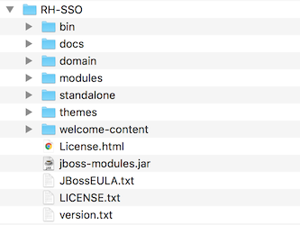
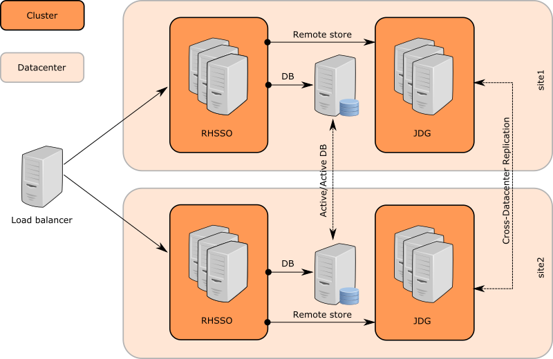
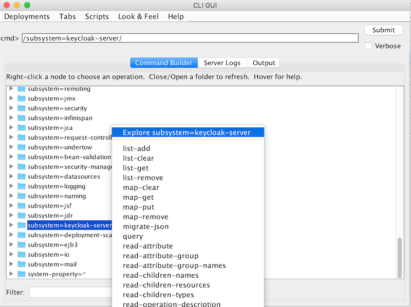
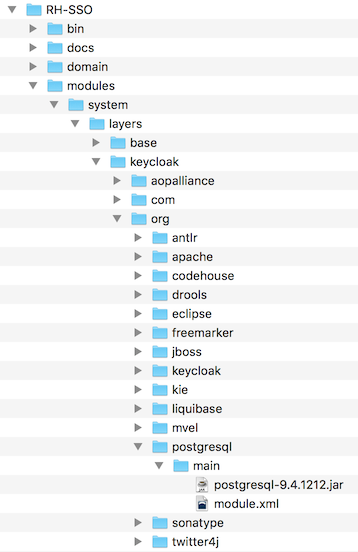

Server Installation and Configuration Guide
For Use with Red Hat Single Sign-On Continuous Delivery 6
Abstract
- 1. Guide Overview
- 2. Installation
- 3. Choosing an Operating Mode
- 3.1. Standalone Mode
- 3.2. Standalone Clustered Mode
- 3.3. Domain Clustered Mode
- 3.4. Cross-Datacenter Replication Mode
- 3.4.1. Prerequisites
- 3.4.2. Technical details
- 3.4.3. Request processing
- 3.4.4. Modes
- 3.4.5. Database
- 3.4.6. Infinispan caches
- 3.4.7. Communication details
- 3.4.8. Basic setup
- 3.4.9. Administration of Cross DC deployment
- 3.4.10. Bringing sites offline and online
- 3.4.11. State transfer
- 3.4.12. Clear caches
- 3.4.13. Tuning the JDG cache configuration
- 3.4.14. SYNC or ASYNC backups
- 3.4.15. Troubleshooting
- 4. Manage Subsystem Configuration
- 4.1. Configure SPI Providers
- 4.2. Start the JBoss EAP CLI
- 4.3. CLI Embedded Mode
- 4.4. CLI GUI Mode
- 4.5. CLI Scripting
- 4.6. CLI Recipes
- 4.6.1. Change the web context of the server
- 4.6.2. Set the global default theme
- 4.6.3. Add a new SPI and a provider
- 4.6.4. Disable a provider
- 4.6.5. Change the default provider for an SPI
- 4.6.6. Configure the dblock SPI
- 4.6.7. Add or change a single property value for a provider
- 4.6.8. Remove a single property from a provider
- 4.6.9. Set values on a provider property of type
List
- 5. Profiles
- 6. Relational Database Setup
- 7. Network Setup
- 8. Clustering
- 9. Server Cache Configuration
Chapter 1. Guide Overview
The purpose of this guide is to walk through the steps that need to be completed prior to booting up the Red Hat Single Sign-On server for the first time. If you just want to test drive Red Hat Single Sign-On, it pretty much runs out of the box with its own embedded and local-only database. For actual deployments that are going to be run in production you’ll need to decide how you want to manage server configuration at runtime (standalone or domain mode), configure a shared database for Red Hat Single Sign-On storage, set up encryption and HTTPS, and finally set up Red Hat Single Sign-On to run in a cluster. This guide walks through each and every aspect of any pre-boot decisions and setup you must do prior to deploying the server.
One thing to particularly note is that Red Hat Single Sign-On is derived from the JBoss EAP Application Server. Many aspects of configuring Red Hat Single Sign-On revolve around JBoss EAP configuration elements. Often this guide will direct you to documentation outside of the manual if you want to dive into more detail.
1.1. Recommended Additional External Documentation
Red Hat Single Sign-On is built on top of the JBoss EAP application server and it’s sub-projects like Infinispan (for caching) and Hibernate (for persistence). This guide only covers basics for infrastructure-level configuration. It is highly recommended that you peruse the documentation for JBoss EAP and its sub projects. Here is the link to the documentation:
Chapter 2. Installation
You can install Red Hat Single Sign-On by downloading a ZIP file and unzipping it, or by using an RPM. This chapter reviews system requirements as well as the directory structure.
2.1. System Requirements
These are the requirements to run the Red Hat Single Sign-On authentication server:
- Can run on any operating system that runs Java
- Java 8 JDK
- zip or gzip and tar
- At least 512M of RAM
- At least 1G of diskspace
- A shared external database like PostgreSQL, MySQL, Oracle, etc. Red Hat Single Sign-On requires an external shared database if you want to run in a cluster. Please see the database configuration section of this guide for more information.
- Network multicast support on your machine if you want to run in a cluster. Red Hat Single Sign-On can be clustered without multicast, but this requires a bunch of configuration changes. Please see the clustering section of this guide for more information.
-
On Linux, it is recommended to use
/dev/urandomas a source of random data to prevent Red Hat Single Sign-On hanging due to lack of available entropy, unless/dev/randomusage is mandated by your security policy. To achieve that on Oracle JDK 8 and OpenJDK 8, set thejava.security.egdsystem property on startup tofile:/dev/urandom.
2.2. Installing RH-SSO from a ZIP File
The Red Hat Single Sign-On Server is contained in one distribution file: rh-sso-6.zip.gz.
The rh-sso-6.zip.gz archive is the server-only distribution. It contains only the scripts and binaries to run Red Hat Single Sign-On Server.
To unpack these files, run the unzip or gunzip utility.
2.3. Installing RH-SSO from an RPM
With Red Hat Enterprise Linux 7 and 8, the term channel was replaced with the term repository. In these instructions only the term repository is used.
You must subscribe to both the JBoss EAP 7.2 and RH-SSO 6 repositories before you can install RH-SSO from an RPM.
You cannot continue to receive upgrades to EAP RPMs but stop receiving updates for RH-SSO.
2.3.1. Subscribing to the JBoss EAP 7.2 Repository
Prerequisites
- Ensure that your Red Hat Enterprise Linux system is registered to your account using Red Hat Subscription Manager. For more information see the Red Hat Subscription Management documentation.
- If you are already subscribed to another JBoss EAP repository, you must unsubscribe from that repository first.
For Red Hat Enterprise Linux 6, 7: Using Red Hat Subscription Manager, subscribe to the JBoss EAP 7.2 repository using the following command. Replace <RHEL_VERSION> with either 6 or 7 depending on your Red Hat Enterprise Linux version.
subscription-manager repos --enable=jb-eap-7.2-for-rhel-<RHEL_VERSION>-server-rpms --enable=rhel-<RHEL_VERSION>-server-rpms
For Red Hat Enterprise Linux 8: Using Red Hat Subscription Manager, subscribe to the JBoss EAP 7.2 repository using the following command:
subscription-manager repos --enable=jb-eap-7.2-for-rhel-8-x86_64-rpms --enable=rhel-8-for-x86_64-baseos-rpms --enable=rhel-8-for-x86_64-appstream-rpms
2.3.2. Subscribing to the RH-SSO 6 Repository and Installing RH-SSO 6
Prerequisites
- Ensure that your Red Hat Enterprise Linux system is registered to your account using Red Hat Subscription Manager. For more information see the Red Hat Subscription Management documentation.
- Ensure that you have already subscribed to the JBoss EAP 7.2 repository. For more information see Subscribing to the JBoss EAP 7.2 repository.
To subscribe to the RH-SSO 6 repository and install RH-SSO 6, complete the following steps:
For Red Hat Enterprise Linux 6, 7: Using Red Hat Subscription Manager, subscribe to the RH-SSO 6 repository using the following command. Replace <RHEL_VERSION> with either 6 or 7 depending on your Red Hat Enterprise Linux version.
subscription-manager repos --enable=rh-sso-6-for-rhel-<RHEL-VERSION>-server-rpms
For Red Hat Enterprise Linux 8: Using Red Hat Subscription Manager, subscribe to the RH-SSO 6 repository using the following command:
subscription-manager repos --enable=rh-sso-6-for-rhel-8-x86_64-rpms
For Red Hat Enterprise Linux 6, 7: Install RH-SSO from your subscribed RH-SSO 6 repository using the following command:
yum groupinstall rh-sso7
For Red Hat Enterprise Linux 8: Install RH-SSO from your subscribed RH-SSO 6 repository using the following command:
dnf groupinstall rh-sso7
Your installation is complete. The default RH-SSO_HOME path for the RPM installation is /opt/rh/rh-sso7/root/usr/share/keycloak.
2.4. Distribution Directory Structure
This chapter walks you through the directory structure of the server distribution.
distribution directory structure

Let’s examine the purpose of some of the directories:
- bin/
- This contains various scripts to either boot the server or perform some other management action on the server.
- domain/
- This contains configuration files and working directory when running Red Hat Single Sign-On in domain mode.
- modules/
- These are all the Java libraries used by the server.
- standalone/
- This contains configuration files and working directory when running Red Hat Single Sign-On in standalone mode.
- themes/
- This directory contains all the html, style sheets, JavaScript files, and images used to display any UI screen displayed by the server. Here you can modify an existing theme or create your own. See the Server Developer Guide for more information on this.
Chapter 3. Choosing an Operating Mode
Before deploying Red Hat Single Sign-On in a production environment you need to decide which type of operating mode you are going to use. Will you run Red Hat Single Sign-On within a cluster? Do you want a centralized way to manage your server configurations? Your choice of operating mode effects how you configure databases, configure caching and even how you boot the server.
The Red Hat Single Sign-On is built on top of the JBoss EAP Application Server. This guide will only go over the basics for deployment within a specific mode. If you want specific information on this, a better place to go would be the JBoss EAP Configuration Guide.
3.1. Standalone Mode
Standalone operating mode is only useful when you want to run one, and only one Red Hat Single Sign-On server instance. It is not usable for clustered deployments and all caches are non-distributed and local-only. It is not recommended that you use standalone mode in production as you will have a single point of failure. If your standalone mode server goes down, users will not be able to log in. This mode is really only useful to test drive and play with the features of Red Hat Single Sign-On
3.1.1. Standalone Boot Script
When running the server in standalone mode, there is a specific script you need to run to boot the server depending on your operating system. These scripts live in the bin/ directory of the server distribution.
Standalone Boot Scripts

To boot the server:
Linux/Unix
$ .../bin/standalone.sh
Windows
> ...\bin\standalone.bat
3.1.2. Standalone Configuration
The bulk of this guide walks you through how to configure infrastructure level aspects of Red Hat Single Sign-On. These aspects are configured in a configuration file that is specific to the application server that Red Hat Single Sign-On is a derivative of. In the standalone operation mode, this file lives in …/standalone/configuration/standalone.xml. This file is also used to configure non-infrastructure level things that are specific to Red Hat Single Sign-On components.
Standalone Config File

Any changes you make to this file while the server is running will not take effect and may even be overwritten by the server. Instead use the command line scripting or the web console of JBoss EAP. See the JBoss EAP Configuration Guide for more information.
3.2. Standalone Clustered Mode
Standalone clustered operation mode is for when you want to run Red Hat Single Sign-On within a cluster. This mode requires that you have a copy of the Red Hat Single Sign-On distribution on each machine you want to run a server instance. This mode can be very easy to deploy initially, but can become quite cumbersome. To make a configuration change you’ll have to modify each distribution on each machine. For a large cluster this can become time consuming and error prone.
3.2.1. Standalone Clustered Configuration
The distribution has a mostly pre-configured app server configuration file for running within a cluster. It has all the specific infrastructure settings for networking, databases, caches, and discovery. This file resides in …/standalone/configuration/standalone-ha.xml. There’s a few things missing from this configuration. You can’t run Red Hat Single Sign-On in a cluster without configuring a shared database connection. You also need to deploy some type of load balancer in front of the cluster. The clustering and database sections of this guide walk you though these things.
Standalone HA Config

Any changes you make to this file while the server is running will not take effect and may even be overwritten by the server. Instead use the command line scripting or the web console of JBoss EAP. See the JBoss EAP Configuration Guide for more information.
3.2.2. Standalone Clustered Boot Script
You use the same boot scripts to start Red Hat Single Sign-On as you do in standalone mode. The difference is that you pass in an additional flag to point to the HA config file.
Standalone Clustered Boot Scripts
To boot the server:
Linux/Unix
$ .../bin/standalone.sh --server-config=standalone-ha.xml
Windows
> ...\bin\standalone.bat --server-config=standalone-ha.xml
3.3. Domain Clustered Mode
Domain mode is a way to centrally manage and publish the configuration for your servers.
Running a cluster in standard mode can quickly become aggravating as the cluster grows in size. Every time you need to make a configuration change, you have perform it on each node in the cluster. Domain mode solves this problem by providing a central place to store and publish configuration. It can be quite complex to set up, but it is worth it in the end. This capability is built into the JBoss EAP Application Server which Red Hat Single Sign-On derives from.
The guide will go over the very basics of domain mode. Detailed steps on how to set up domain mode in a cluster should be obtained from the JBoss EAP Configuration Guide.
Here are some of the basic concepts of running in domain mode.
- domain controller
- The domain controller is a process that is responsible for storing, managing, and publishing the general configuration for each node in the cluster. This process is the central point from which nodes in a cluster obtain their configuration.
- host controller
- The host controller is responsible for managing server instances on a specific machine. You configure it to run one or more server instances. The domain controller can also interact with the host controllers on each machine to manage the cluster. To reduce the number of running process, a domain controller also acts as a host controller on the machine it runs on.
- domain profile
- A domain profile is a named set of configuration that can be used by a server to boot from. A domain controller can define multiple domain profiles that are consumed by different servers.
- server group
- A server group is a collection of servers. They are managed and configured as one. You can assign a domain profile to a server group and every service in that group will use that domain profile as their configuration.
In domain mode, a domain controller is started on a master node. The configuration for the cluster resides in the domain controller. Next a host controller is started on each machine in the cluster. Each host controller deployment configuration specifies how many Red Hat Single Sign-On server instances will be started on that machine. When the host controller boots up, it starts as many Red Hat Single Sign-On server instances as it was configured to do. These server instances pull their configuration from the domain controller.
In some environments, such as Microsoft Azure, the domain mode is not applicable. Please consult the JBoss EAP documentation.
3.3.1. Domain Configuration
Various other chapters in this guide walk you through configuring various aspects like databases, HTTP network connections, caches, and other infrastructure related things. While standalone mode uses the standalone.xml file to configure these things, domain mode uses the …/domain/configuration/domain.xml configuration file. This is where the domain profile and server group for the Red Hat Single Sign-On server are defined.
domain.xml

Any changes you make to this file while the domain controller is running will not take effect and may even be overwritten by the server. Instead use the command line scripting or the web console of JBoss EAP. See the JBoss EAP Configuration Guide for more information.
Let’s look at some aspects of this domain.xml file. The auth-server-standalone and auth-server-clustered profile XML blocks are where you are going to make the bulk of your configuration decisions. You’ll be configuring things here like network connections, caches, and database connections.
auth-server profile
<profiles>
<profile name="auth-server-standalone">
...
</profile>
<profile name="auth-server-clustered">
...
</profile>
The auth-server-standalone profile is a non-clustered setup. The auth-server-clustered profile is the clustered setup.
If you scroll down further, you’ll see various socket-binding-groups defined.
socket-binding-groups
<socket-binding-groups>
<socket-binding-group name="standard-sockets" default-interface="public">
...
</socket-binding-group>
<socket-binding-group name="ha-sockets" default-interface="public">
...
</socket-binding-group>
<!-- load-balancer-sockets should be removed in production systems and replaced with a better software or hardware based one -->
<socket-binding-group name="load-balancer-sockets" default-interface="public">
...
</socket-binding-group>
</socket-binding-groups>
This config defines the default port mappings for various connectors that are opened with each Red Hat Single Sign-On server instance. Any value that contains ${…} is a value that can be overridden on the command line with the -D switch, i.e.
$ domain.sh -Djboss.http.port=80
The definition of the server group for Red Hat Single Sign-On resides in the server-groups XML block. It specifies the domain profile that is used (default) and also some default boot arguments for the Java VM when the host controller boots an instance. It also binds a socket-binding-group to the server group.
server group
<server-groups>
<!-- load-balancer-group should be removed in production systems and replaced with a better software or hardware based one -->
<server-group name="load-balancer-group" profile="load-balancer">
<jvm name="default">
<heap size="64m" max-size="512m"/>
</jvm>
<socket-binding-group ref="load-balancer-sockets"/>
</server-group>
<server-group name="auth-server-group" profile="auth-server-clustered">
<jvm name="default">
<heap size="64m" max-size="512m"/>
</jvm>
<socket-binding-group ref="ha-sockets"/>
</server-group>
</server-groups>
3.3.2. Host Controller Configuration
Red Hat Single Sign-On comes with two host controller configuration files that reside in the …/domain/configuration/ directory: host-master.xml and host-slave.xml. host-master.xml is configured to boot up a domain controller, a load balancer, and one Red Hat Single Sign-On server instance. host-slave.xml is configured to talk to the domain controller and boot up one Red Hat Single Sign-On server instance.
The load balancer is not a required service. It exists so that you can easily test drive clustering on your development machine. While usable in production, you have the option of replacing it if you have a different hardware or software based load balancer you want to use.
Host Controller Config

To disable the load balancer server instance, edit host-master.xml and comment out or remove the "load-balancer" entry.
<servers>
<!-- remove or comment out next line -->
<server name="load-balancer" group="loadbalancer-group"/>
...
</servers>
Another interesting thing to note about this file is the declaration of the authentication server instance. It has a port-offset setting. Any network port defined in the domain.xml socket-binding-group or the server group will have the value of port-offset added to it. For this example domain setup we do this so that ports opened by the load balancer server don’t conflict with the authentication server instance that is started.
<servers>
...
<server name="server-one" group="auth-server-group" auto-start="true">
<socket-bindings port-offset="150"/>
</server>
</servers>3.3.3. Server Instance Working Directories
Each Red Hat Single Sign-On server instance defined in your host files creates a working directory under …/domain/servers/{SERVER NAME}. Additional configuration can be put there, and any temporary, log, or data files the server instance needs or creates go there too. The structure of these per server directories ends up looking like any other JBoss EAP booted server.
Working Directories

3.3.4. Domain Boot Script
When running the server in domain mode, there is a specific script you need to run to boot the server depending on your operating system. These scripts live in the bin/ directory of the server distribution.
Domain Boot Script

To boot the server:
Linux/Unix
$ .../bin/domain.sh --host-config=host-master.xml
Windows
> ...\bin\domain.bat --host-config=host-master.xml
When running the boot script you will need pass in the host controlling configuration file you are going to use via the --host-config switch.
3.3.5. Clustered Domain Example
You can test drive clustering using the out-of-the-box domain.xml configuration. This example domain is meant to run on one machine and boots up:
- a domain controller
- an HTTP load balancer
- 2 Red Hat Single Sign-On server instances
To simulate running a cluster on two machines, you’ll run the domain.sh script twice to start two separate host controllers. The first will be the master host controller which will start a domain controller, an HTTP load balancer, and one Red Hat Single Sign-On authentication server instance. The second will be a slave host controller that only starts up an authentication server instance.
3.3.5.1. Setup Slave Connection to Domain Controller
Before you can boot things up though, you have to configure the slave host controller so that it can talk securely to the domain controller. If you do not do this, then the slave host will not be able to obtain the centralized configuration from the domain controller. To set up a secure connection, you have to create a server admin user and a secret that will be shared between the master and the slave. You do this by running the …/bin/add-user.sh script.
When you run the script select Management User and answer yes when it asks you if the new user is going to be used for one AS process to connect to another. This will generate a secret that you’ll need to cut and paste into the …/domain/configuration/host-slave.xml file.
Add App Server Admin
$ add-user.sh
What type of user do you wish to add?
a) Management User (mgmt-users.properties)
b) Application User (application-users.properties)
(a): a
Enter the details of the new user to add.
Using realm 'ManagementRealm' as discovered from the existing property files.
Username : admin
Password recommendations are listed below. To modify these restrictions edit the add-user.properties configuration file.
- The password should not be one of the following restricted values {root, admin, administrator}
- The password should contain at least 8 characters, 1 alphabetic character(s), 1 digit(s), 1 non-alphanumeric symbol(s)
- The password should be different from the username
Password :
Re-enter Password :
What groups do you want this user to belong to? (Please enter a comma separated list, or leave blank for none)[ ]:
About to add user 'admin' for realm 'ManagementRealm'
Is this correct yes/no? yes
Added user 'admin' to file '/.../standalone/configuration/mgmt-users.properties'
Added user 'admin' to file '/.../domain/configuration/mgmt-users.properties'
Added user 'admin' with groups to file '/.../standalone/configuration/mgmt-groups.properties'
Added user 'admin' with groups to file '/.../domain/configuration/mgmt-groups.properties'
Is this new user going to be used for one AS process to connect to another AS process?
e.g. for a slave host controller connecting to the master or for a Remoting connection for server to server EJB calls.
yes/no? yes
To represent the user add the following to the server-identities definition <secret value="bWdtdDEyMyE=" />
The add-user.sh does not add user to Red Hat Single Sign-On server but to the underlying JBoss Enterprise Application Platform. The credentials used and generated in the above script are only for example purpose. Please use the ones generated on your system.
Now cut and paste the secret value into the …/domain/configuration/host-slave.xml file as follows:
<management>
<security-realms>
<security-realm name="ManagementRealm">
<server-identities>
<secret value="bWdtdDEyMyE="/>
</server-identities>You will also need to add the username of the created user in the …/domain/configuration/host-slave.xml file:
<remote security-realm="ManagementRealm" username="admin">
3.3.5.2. Run the Boot Scripts
Since we’re simulating a two node cluster on one development machine, you’ll run the boot script twice:
Boot up master
$ domain.sh --host-config=host-master.xml
Boot up slave
$ domain.sh --host-config=host-slave.xml
To try it out, open your browser and go to http://localhost:8080/auth.
3.4. Cross-Datacenter Replication Mode
Cross-Datacenter Replication Mode is Technology Preview and is not fully supported.
Cross-Datacenter Replication mode is for when you want to run Red Hat Single Sign-On in a cluster across multiple data centers, most typically using data center sites that are in different geographic regions. When using this mode, each data center will have its own cluster of Red Hat Single Sign-On servers.
This documentation will refer the following example architecture diagram to illustrate and describe a simple Cross-Datacenter Replication use case.
Example Architecture Diagram

3.4.1. Prerequisites
As this is an advanced topic, we recommend you first read the following, which provide valuable background knowledge:
- Clustering with Red Hat Single Sign-On When setting up for Cross-Datacenter Replication, you will use more independent Red Hat Single Sign-On clusters, so you must understand how a cluster works and the basic concepts and requirements such as load balancing, shared databases, and multicasting.
- JBoss Data Grid Cross-Datacenter Replication Red Hat Single Sign-On uses JBoss Data Grid (JDG) for the replication of Infinispan data between the data centers.
3.4.2. Technical details
This section provides an introduction to the concepts and details of how Red Hat Single Sign-On Cross-Datacenter Replication is accomplished.
Data
Red Hat Single Sign-On is stateful application. It uses the following as data sources:
- A database is used to persist permanent data, such as user information.
- An Infinispan cache is used to cache persistent data from the database and also to save some short-lived and frequently-changing metadata, such as for user sessions. Infinispan is usually much faster than a database, however the data saved using Infinispan are not permanent and is not expected to persist across cluster restarts.
In our example architecture, there are two data centers called site1 and site2. For Cross-Datacenter Replication, we must make sure that both sources of data work reliably and that Red Hat Single Sign-On servers from site1 are eventually able to read the data saved by Red Hat Single Sign-On servers on site2 .
Based on the environment, you have the option to decide if you prefer:
-
Reliability - which is typically used in Active/Active mode. Data written on
site1must be visible immediately onsite2. -
Performance - which is typically used in Active/Passive mode. Data written on
site1does not need to be visible immediately onsite2. In some cases, the data may not be visible onsite2at all.
For more details, see Section 3.4.4, “Modes”.
3.4.3. Request processing
An end user’s browser sends an HTTP request to the front end load balancer. This load balancer is usually HTTPD or WildFly with mod_cluster, NGINX, HA Proxy, or perhaps some other kind of software or hardware load balancer.
The load balancer then forwards the HTTP requests it receives to the underlying Red Hat Single Sign-On instances, which can be spread among multiple data centers. Load balancers typically offer support for sticky sessions, which means that the load balancer is able to always forward all HTTP requests from the same user to the same Red Hat Single Sign-On instance in same data center.
HTTP requests that are sent from client applications to the load balancer are called backchannel requests. These are not seen by an end user’s browser and therefore can not be part of a sticky session between the user and the load balancer. For backchannel requests, the loadbalancer can forward the HTTP request to any Red Hat Single Sign-On instance in any data center. This is challenging as some OpenID Connect and some SAML flows require multiple HTTP requests from both the user and the application. Because we can not reliably depend on sticky sessions to force all the related requests to be sent to the same Red Hat Single Sign-On instance in the same data center, we must instead replicate some data across data centers, so the data are seen by subsequent HTTP requests during a particular flow.
3.4.4. Modes
According your requirements, there are two basic operating modes for Cross-Datacenter Replication:
-
Active/Passive - Here the users and client applications send the requests just to the Red Hat Single Sign-On nodes in just a single data center. The second data center is used just as a
backupfor saving the data. In case of the failure in the main data center, the data can be usually restored from the second data center. -
Active/Active - Here the users and client applications send the requests to the Red Hat Single Sign-On nodes in both data centers. It means that data need to be visible immediately on both sites and available to be consumed immediately from Red Hat Single Sign-On servers on both sites. This is especially true if Red Hat Single Sign-On server writes some data on
site1, and it is required that the data are available immediately for reading by Red Hat Single Sign-On servers onsite2immediately after the write onsite1is finished.
The active/passive mode is better for performance. For more information about how to configure caches for either mode, see: Section 3.4.14, “SYNC or ASYNC backups”.
3.4.5. Database
Red Hat Single Sign-On uses a relational database management system (RDBMS) to persist some metadata about realms, clients, users, and so on. See this chapter of the server installation guide for more details. In a Cross-Datacenter Replication setup, we assume that either both data centers talk to the same database or that every data center has its own database node and both database nodes are synchronously replicated across the data centers. In both cases, it is required that when a Red Hat Single Sign-On server on site1 persists some data and commits the transaction, those data are immediately visible by subsequent DB transactions on site2.
Details of DB setup are out-of-scope for Red Hat Single Sign-On, however many RDBMS vendors like MariaDB and Oracle offer replicated databases and synchronous replication. We test Red Hat Single Sign-On with these vendors:
- Oracle Database 12c Release 1 (12.1) RAC
- Galera 3.12 cluster for MariaDB server version 10.1.19-MariaDB
3.4.6. Infinispan caches
This section begins with a high level description of the Infinispan caches. More details of the cache setup follow.
Authentication sessions
In Red Hat Single Sign-On we have the concept of authentication sessions. There is a separate Infinispan cache called authenticationSessions used to save data during authentication of particular user. Requests from this cache usually involve only a browser and the Red Hat Single Sign-On server, not the application. Here we can rely on sticky sessions and the authenticationSessions cache content does not need to be replicated across data centers, even if you are in Active/Active mode.
Caching and invalidation of persistent data
Red Hat Single Sign-On uses Infinispan to cache persistent data to avoid many unnecessary requests to the database. Caching improves performance, however it adds an additional challenge. When some Red Hat Single Sign-On server updates any data, all other Red Hat Single Sign-On servers in all data centers need to be aware of it, so they invalidate particular data from their caches. Red Hat Single Sign-On uses local Infinispan caches called realms, users, and authorization to cache persistent data.
We use a separate cache, work, which is replicated across all data centers. The work cache itself does not cache any real data. It is used only for sending invalidation messages between cluster nodes and data centers. In other words, when data is updated, such as the user john, the Red Hat Single Sign-On node sends the invalidation message to all other cluster nodes in the same data center and also to all other data centers. After receiving the invalidation notice, every node then invalidates the appropriate data from their local cache.
User sessions
There are Infinispan caches called sessions, clientSessions, offlineSessions, and offlineClientSessions, all of which usually need to be replicated across data centers. These caches are used to save data about user sessions, which are valid for the length of a user’s browser session. The caches must handle the HTTP requests from the end user and from the application. As described above, sticky sessions can not be reliably used in this instance, but we still want to ensure that subsequent HTTP requests can see the latest data. For this reason, the data are usually replicated across data centers.
Brute force protection
Finally the loginFailures cache is used to track data about failed logins, such as how many times the user john entered a bad password. The details are described here. It is up to the admin whether this cache should be replicated across data centers. To have an accurate count of login failures, the replication is needed. On the other hand, not replicating this data can save some performance. So if performance is more important than accurate counts of login failures, the replication can be avoided.
For more detail about how caches can be configured see Section 3.4.13, “Tuning the JDG cache configuration”.
3.4.7. Communication details
Red Hat Single Sign-On uses multiple, separate clusters of Infinispan caches. Every Red Hat Single Sign-On node is in the cluster with the other Red Hat Single Sign-On nodes in same data center, but not with the Red Hat Single Sign-On nodes in different data centers. A Red Hat Single Sign-On node does not communicate directly with the Red Hat Single Sign-On nodes from different data centers. Red Hat Single Sign-On nodes use external JDG (actually JDG servers) for communication across data centers. This is done using the Infinispan HotRod protocol.
The Infinispan caches on the Red Hat Single Sign-On side must be configured with the remoteStore to ensure that data are saved to the remote cache. There is separate Infinispan cluster between JDG servers, so the data saved on JDG1 on site1 are replicated to JDG2 on site2 .
Finally, the receiving JDG server notifies the Red Hat Single Sign-On servers in its cluster through the Client Listeners, which are a feature of the HotRod protocol. Red Hat Single Sign-On nodes on site2 then update their Infinispan caches and the particular user session is also visible on Red Hat Single Sign-On nodes on site2.
See the Example Architecture Diagram for more details.
3.4.8. Basic setup
For this example, we describe using two data centers, site1 and site2. Each data center consists of 1 JDG server and 2 Red Hat Single Sign-On servers. We will end up with 2 JDG servers and 4 Red Hat Single Sign-On servers in total.
-
Site1consists of JDG server,jdg1, and 2 Red Hat Single Sign-On servers,node11andnode12. -
Site2consists of JDG server,jdg2, and 2 Red Hat Single Sign-On servers,node21andnode22. -
JDG servers
jdg1andjdg2are connected to each other through the RELAY2 protocol andbackupbased JDG caches in a similar way as described in the JDG documentation. -
Red Hat Single Sign-On servers
node11andnode12form a cluster with each other, but they do not communicate directly with any server insite2. They communicate with the Infinispan serverjdg1using the HotRod protocol (Remote cache). See Section 3.4.7, “Communication details” for the details. -
The same details apply for
node21andnode22. They cluster with each other and communicate only withjdg2server using the HotRod protocol.
Our example setup assumes all that all 4 Red Hat Single Sign-On servers talk to the same database. In production, it is recommended to use separate synchronously replicated databases across data centers as described in Section 3.4.5, “Database”.
3.4.8.1. JDG server setup
Follow these steps to set up the JDG server:
-
Download JDG 7.3.0 server and unzip to a directory you choose. This location will be referred in later steps as
JDG1_HOME. Change those things in the
JDG1_HOME/standalone/configuration/clustered.xmlin the configuration of JGroups subsystem:Add the
xsitechannel, which will usetcpstack, underchannelselement:<channels default="cluster"> <channel name="cluster"/> <channel name="xsite" stack="tcp"/> </channels>Add a
relayelement to the end of theudpstack. We will configure it in a way that our site issite1and the other site, where we will backup, issite2:<stack name="udp"> ... <relay site="site1"> <remote-site name="site2" channel="xsite"/> <property name="relay_multicasts">false</property> </relay> </stack>Configure the
tcpstack to useTCPPINGprotocol instead ofMPING. Remove theMPINGelement and replace it with theTCPPING. Theinitial_hostselement points to the hostsjdg1andjdg2:<stack name="tcp"> <transport type="TCP" socket-binding="jgroups-tcp"/> <protocol type="TCPPING"> <property name="initial_hosts">jdg1[7600],jdg2[7600]</property> <property name="ergonomics">false</property> </protocol> <protocol type="MERGE3"/> ... </stack>NoteThis is just an example setup to have things quickly running. In production, you are not required to use
tcpstack for the JGroupsRELAY2, but you can configure any other stack. For example, you could use the default udp stack, if the network between your data centers is able to support multicast. Just make sure that the JDG and Red Hat Single Sign-On clusters are mutually indiscoverable. Similarly, you are not required to useTCPPINGas discovery protocol. And in production, you probably won’t useTCPPINGdue it’s static nature. Finally, site names are also configurable. Details of this more-detailed setup are out-of-scope of the Red Hat Single Sign-On documentation. See the JDG documentation and JGroups documentation for more details.
Add this into
JDG1_HOME/standalone/configuration/clustered.xmlunder cache-container namedclustered:<cache-container name="clustered" default-cache="default" statistics="true"> ... <replicated-cache-configuration name="sessions-cfg" mode="SYNC" start="EAGER" batching="false"> <transaction mode="NON_DURABLE_XA" locking="PESSIMISTIC"/> <locking acquire-timeout="0" /> <backups> <backup site="site2" failure-policy="FAIL" strategy="SYNC" enabled="true"> <take-offline min-wait="60000" after-failures="3" /> </backup> </backups> </replicated-cache-configuration> <replicated-cache name="work" configuration="sessions-cfg"/> <replicated-cache name="sessions" configuration="sessions-cfg"/> <replicated-cache name="clientSessions" configuration="sessions-cfg"/> <replicated-cache name="offlineSessions" configuration="sessions-cfg"/> <replicated-cache name="offlineClientSessions" configuration="sessions-cfg"/> <replicated-cache name="actionTokens" configuration="sessions-cfg"/> <replicated-cache name="loginFailures" configuration="sessions-cfg"/> </cache-container>NoteDetails about the configuration options inside
replicated-cache-configurationare explained in Section 3.4.13, “Tuning the JDG cache configuration”, which includes information about tweaking some of those options.Some JDG server releases require authorization before accessing protected caches over network.
NoteYou should not see any issue if you use recommended JDG 7.3.0 server and this step can (and should) be ignored. Issues related to authorization may exist just for some other versions of JDG server.
Red Hat Single Sign-On requires updates to
___script_cachecache containing scripts. If you get errors accessing this cache, you will need to set up authorization inclustered.xmlconfiguration as described below:In the
<management>section, add a security realm:<management> <security-realms> ... <security-realm name="AllowScriptManager"> <authentication> <users> <user username="___script_manager"> <password>not-so-secret-password</password> </user> </users> </authentication> </security-realm> </security-realms>In the server core subsystem, add
<security>as below:<subsystem xmlns="urn:infinispan:server:core:8.4"> <cache-container name="clustered" default-cache="default" statistics="true"> <security> <authorization> <identity-role-mapper/> <role name="___script_manager" permissions="ALL"/> </authorization> </security> ...In the endpoint subsystem, add authentication configuration to Hot Rod connector:
<subsystem xmlns="urn:infinispan:server:endpoint:8.1"> <hotrod-connector cache-container="clustered" socket-binding="hotrod"> ... <authentication security-realm="AllowScriptManager"> <sasl mechanisms="DIGEST-MD5" qop="auth" server-name="keycloak-jdg-server"> <policy> <no-anonymous value="false" /> </policy> </sasl> </authentication>
-
Copy the server to the second location, which will be referred to later as
JDG2_HOME. In the
JDG2_HOME/standalone/configuration/clustered.xmlexchangesite1withsite2and vice versa, both in the configuration ofrelayin the JGroups subsystem and in configuration ofbackupsin the cache-subsystem. For example:The
relayelement should look like this:<relay site="site2"> <remote-site name="site1" channel="xsite"/> <property name="relay_multicasts">false</property> </relay>The
backupselement like this:<backups> <backup site="site1" .... ...It is currently required to have different configuration files for the JDG servers on both sites as the Infinispan subsystem does not support replacing site names with expressions. See this issue for more details.
Start server
jdg1:cd JDG1_HOME/bin ./standalone.sh -c clustered.xml -Djava.net.preferIPv4Stack=true \ -Djboss.default.multicast.address=234.56.78.99 \ -Djboss.node.name=jdg1 -b PUBLIC_IP_ADDRESSStart server
jdg2. There is a different multicast address, so thejdg1andjdg2servers are not directly clustered with each other; rather, they are just connected through the RELAY2 protocol, and the TCP JGroups stack is used for communication between them. The start up command looks like this:cd JDG2_HOME/bin ./standalone.sh -c clustered.xml -Djava.net.preferIPv4Stack=true \ -Djboss.default.multicast.address=234.56.78.100 \ -Djboss.node.name=jdg2 -b PUBLIC_IP_ADDRESSTo verify that channel works at this point, you may need to use JConsole and connect either to the running
JDG1or theJDG2server. When you use the MBeanjgroups:type=protocol,cluster="cluster",protocol=RELAY2and operationprintRoutes, you should see output like this:site1 --> _jdg1:site1 site2 --> _jdg2:site2
When you use the MBean
jgroups:type=protocol,cluster="cluster",protocol=GMS, you should see that the attribute member contains just single member:On
JDG1it should be like this:(1) jdg1
And on JDG2 like this:
(1) jdg2
NoteIn production, you can have more JDG servers in every data center. You just need to ensure that JDG servers in same data center are using the same multicast address (In other words, the same
jboss.default.multicast.addressduring startup). Then in jconsole inGMSprotocol view, you will see all the members of current cluster.
3.4.8.2. Red Hat Single Sign-On servers setup
-
Unzip Red Hat Single Sign-On server distribution to a location you choose. It will be referred to later as
NODE11. Configure a shared database for KeycloakDS datasource. It is recommended to use MySQL or MariaDB for testing purposes. See Section 3.4.5, “Database” for more details.
In production you will likely need to have a separate database server in every data center and both database servers should be synchronously replicated to each other. In the example setup, we just use a single database and connect all 4 Red Hat Single Sign-On servers to it.
Edit
NODE11/standalone/configuration/standalone-ha.xml:Add the attribute
siteto the JGroups UDP protocol:<stack name="udp"> <transport type="UDP" socket-binding="jgroups-udp" site="${jboss.site.name}"/>Add this
moduleattribute undercache-containerelement of namekeycloak:<cache-container name="keycloak" module="org.keycloak.keycloak-model-infinispan">
Add the
remote-storeunderworkcache:<replicated-cache name="work"> <remote-store cache="work" remote-servers="remote-cache" passivation="false" fetch-state="false" purge="false" preload="false" shared="true"> <property name="rawValues">true</property> <property name="marshaller">org.keycloak.cluster.infinispan.KeycloakHotRodMarshallerFactory</property> <property name="protocolVersion">2.6</property> </remote-store> </replicated-cache>Add the
remote-storelike this undersessionscache:<distributed-cache name="sessions" owners="1"> <remote-store cache="sessions" remote-servers="remote-cache" passivation="false" fetch-state="false" purge="false" preload="false" shared="true"> <property name="rawValues">true</property> <property name="marshaller">org.keycloak.cluster.infinispan.KeycloakHotRodMarshallerFactory</property> <property name="protocolVersion">2.6</property> </remote-store> </distributed-cache>Do the same for
offlineSessions,clientSessions,offlineClientSessions,loginFailures, andactionTokenscaches (the only difference fromsessionscache is thatcacheproperty value are different):<distributed-cache name="offlineSessions" owners="1"> <remote-store cache="offlineSessions" remote-servers="remote-cache" passivation="false" fetch-state="false" purge="false" preload="false" shared="true"> <property name="rawValues">true</property> <property name="marshaller">org.keycloak.cluster.infinispan.KeycloakHotRodMarshallerFactory</property> <property name="protocolVersion">2.6</property> </remote-store> </distributed-cache> <distributed-cache name="clientSessions" owners="1"> <remote-store cache="clientSessions" remote-servers="remote-cache" passivation="false" fetch-state="false" purge="false" preload="false" shared="true"> <property name="rawValues">true</property> <property name="marshaller">org.keycloak.cluster.infinispan.KeycloakHotRodMarshallerFactory</property> <property name="protocolVersion">2.6</property> </remote-store> </distributed-cache> <distributed-cache name="offlineClientSessions" owners="1"> <remote-store cache="offlineClientSessions" remote-servers="remote-cache" passivation="false" fetch-state="false" purge="false" preload="false" shared="true"> <property name="rawValues">true</property> <property name="marshaller">org.keycloak.cluster.infinispan.KeycloakHotRodMarshallerFactory</property> <property name="protocolVersion">2.6</property> </remote-store> </distributed-cache> <distributed-cache name="loginFailures" owners="1"> <remote-store cache="loginFailures" remote-servers="remote-cache" passivation="false" fetch-state="false" purge="false" preload="false" shared="true"> <property name="rawValues">true</property> <property name="marshaller">org.keycloak.cluster.infinispan.KeycloakHotRodMarshallerFactory</property> <property name="protocolVersion">2.6</property> </remote-store> </distributed-cache> <distributed-cache name="actionTokens" owners="2"> <object-memory size="-1"/> <expiration max-idle="-1" interval="300000"/> <remote-store cache="actionTokens" remote-servers="remote-cache" passivation="false" fetch-state="false" purge="false" preload="true" shared="true"> <property name="rawValues">true</property> <property name="marshaller">org.keycloak.cluster.infinispan.KeycloakHotRodMarshallerFactory</property> <property name="protocolVersion">2.6</property> </remote-store> </distributed-cache>Add outbound socket binding for the remote store into
socket-binding-groupelement configuration:<outbound-socket-binding name="remote-cache"> <remote-destination host="${remote.cache.host:localhost}" port="${remote.cache.port:11222}"/> </outbound-socket-binding>-
The configuration of distributed cache
authenticationSessionsand other caches is left unchanged. Optionally enable DEBUG logging under the
loggingsubsystem:<logger category="org.keycloak.cluster.infinispan"> <level name="DEBUG"/> </logger> <logger category="org.keycloak.connections.infinispan"> <level name="DEBUG"/> </logger> <logger category="org.keycloak.models.cache.infinispan"> <level name="DEBUG"/> </logger> <logger category="org.keycloak.models.sessions.infinispan"> <level name="DEBUG"/> </logger>
-
Copy the
NODE11to 3 other directories referred later asNODE12,NODE21andNODE22. Start
NODE11:cd NODE11/bin ./standalone.sh -c standalone-ha.xml -Djboss.node.name=node11 -Djboss.site.name=site1 \ -Djboss.default.multicast.address=234.56.78.1 -Dremote.cache.host=jdg1 \ -Djava.net.preferIPv4Stack=true -b PUBLIC_IP_ADDRESSStart
NODE12:cd NODE12/bin ./standalone.sh -c standalone-ha.xml -Djboss.node.name=node12 -Djboss.site.name=site1 \ -Djboss.default.multicast.address=234.56.78.1 -Dremote.cache.host=jdg1 \ -Djava.net.preferIPv4Stack=true -b PUBLIC_IP_ADDRESSThe cluster nodes should be connected. Something like this should be in the log of both NODE11 and NODE12:
Received new cluster view for channel keycloak: [node11|1] (2) [node11, node12]
NoteThe channel name in the log might be different.
Start
NODE21:cd NODE21/bin ./standalone.sh -c standalone-ha.xml -Djboss.node.name=node21 -Djboss.site.name=site2 \ -Djboss.default.multicast.address=234.56.78.2 -Dremote.cache.host=jdg2 \ -Djava.net.preferIPv4Stack=true -b PUBLIC_IP_ADDRESSIt shouldn’t be connected to the cluster with
NODE11andNODE12, but to separate one:Received new cluster view for channel keycloak: [node21|0] (1) [node21]
Start
NODE22:cd NODE22/bin ./standalone.sh -c standalone-ha.xml -Djboss.node.name=node22 -Djboss.site.name=site2 \ -Djboss.default.multicast.address=234.56.78.2 -Dremote.cache.host=jdg2 \ -Djava.net.preferIPv4Stack=true -b PUBLIC_IP_ADDRESSIt should be in cluster with
NODE21:Received new cluster view for channel keycloak: [node21|1] (2) [node21, node22]
NoteThe channel name in the log might be different.
Test:
-
Go to
http://node11:8080/auth/and create the initial admin user. -
Go to
http://node11:8080/auth/adminand login as admin to admin console. -
Open a second browser and go to any of nodes
http://node12:8080/auth/adminorhttp://node21:8080/auth/adminorhttp://node22:8080/auth/admin. After login, you should be able to see the same sessions in tabSessionsof particular user, client or realm on all 4 servers. - After doing any change in Keycloak admin console (eg. update some user or some realm), the update should be immediately visible on any of 4 nodes as caches should be properly invalidated everywhere.
Check server.logs if needed. After login or logout, the message like this should be on all the nodes
NODEXY/standalone/log/server.log:2017-08-25 17:35:17,737 DEBUG [org.keycloak.models.sessions.infinispan.remotestore.RemoteCacheSessionListener] (Client-Listener-sessions-30012a77422542f5) Received event from remote store. Event 'CLIENT_CACHE_ENTRY_REMOVED', key '193489e7-e2bc-4069-afe8-f1dfa73084ea', skip 'false'
-
Go to
3.4.9. Administration of Cross DC deployment
This section contains some tips and options related to Cross-Datacenter Replication.
-
When you run the Red Hat Single Sign-On server inside a data center, it is required that the database referenced in
KeycloakDSdatasource is already running and available in that data center. It is also necessary that the JDG server referenced by theoutbound-socket-binding, which is referenced from the Infinispan cacheremote-storeelement, is already running. Otherwise the Red Hat Single Sign-On server will fail to start. -
Every data center can have more database nodes if you want to support database failover and better reliability. Refer to the documentation of your database and JDBC driver for the details how to set this up on the database side and how the
KeycloakDSdatasource on Keycloak side needs to be configured. - Every datacenter can have more JDG servers running in the cluster. This is useful if you want some failover and better fault tolerance. The HotRod protocol used for communication between JDG servers and Red Hat Single Sign-On servers has a feature that JDG servers will automatically send new topology to the Red Hat Single Sign-On servers about the change in the JDG cluster, so the remote store on Red Hat Single Sign-On side will know to which JDG servers it can connect. Read the JDG and WildFly documentation for more details.
-
It is highly recommended that a master JDG server is running in every site before the Red Hat Single Sign-On servers in any site are started. As in our example, we started both
jdg1andjdg2first, before all Red Hat Single Sign-On servers. If you still need to run the Red Hat Single Sign-On server and the backup site is offline, it is recommended to manually switch the backup site offline on the JDG servers on your site, as described in Section 3.4.10, “Bringing sites offline and online”. If you do not manually switch the unavailable site offline, the first startup may fail or they may be some exceptions during startup until the backup site is taken offline automatically due the configured count of failed operations.
3.4.10. Bringing sites offline and online
For example, assume this scenario:
-
Site
site2is entirely offline from thesite1perspective. This means that all JDG servers onsite2are off or the network betweensite1andsite2is broken. -
You run Red Hat Single Sign-On servers and JDG server
jdg1in sitesite1 -
Someone logs in on a Red Hat Single Sign-On server on
site1. -
The Red Hat Single Sign-On server from
site1will try to write the session to the remote cache onjdg1server, which is supposed to backup data to thejdg2server in thesite2. See Section 3.4.7, “Communication details” for more information. -
Server
jdg2is offline or unreachable fromjdg1. So the backup fromjdg1tojdg2will fail. -
The exception is thrown in
jdg1log and the failure will be propagated fromjdg1server to Red Hat Single Sign-On servers as well because the defaultFAILbackup failure policy is configured. See Backup failure policy for details around the backup policies. - The error will happen on Red Hat Single Sign-On side too and user may not be able to finish his login.
According to your environment, it may be more or less probable that the network between sites is unavailable or temporarily broken (split-brain). In case this happens, it is good that JDG servers on site1 are aware of the fact that JDG servers on site2 are unavailable, so they will stop trying to reach the servers in the jdg2 site and the backup failures won’t happen. This is called Take site offline .
Take site offline
There are 2 ways to take the site offline.
Manually by admin - Admin can use the jconsole or other tool and run some JMX operations to manually take the particular site offline. This is useful especially if the outage is planned. With jconsole or CLI, you can connect to the jdg1 server and take the site2 offline. More details about this are available in the JDG documentation.
These steps usually need to be done for all the Red Hat Single Sign-On caches mentioned in Section 3.4.14, “SYNC or ASYNC backups”.
Automatically - After some amount of failed backups, the site2 will usually be taken offline automatically. This is done due the configuration of take-offline element inside the cache configuration as configured in Section 3.4.8.1, “JDG server setup”.
<take-offline min-wait="60000" after-failures="3" />
This example shows that the site will be taken offline automatically for the particular single cache if there are at least 3 subsequent failed backups and there is no any successful backup within 60 seconds.
Automatically taking a site offline is useful especially if the broken network between sites is unplanned. The disadvantage is that there will be some failed backups until the network outage is detected, which could also mean failures on the application side. For example, there will be failed logins for some users or big login timeouts. Especially if failure-policy with value FAIL is used.
The tracking of whether a site is offline is tracked separately for every cache.
Take site online
Once your network is back and site1 and site2 can talk to each other, you may need to put the site online. This needs to be done manually through JMX or CLI in similar way as taking a site offline. Again, you may need to check all the caches and bring them online.
Once the sites are put online, it’s usually good to:
- Do the Section 3.4.11, “State transfer”.
- Manually Section 3.4.12, “Clear caches”.
3.4.11. State transfer
State transfer is a required, manual step. JDG server does not do this automatically, for example during split-brain, it is only the admin who may decide which site has preference and hence if state transfer needs to be done bidirectionally between both sites or just unidirectionally, as in only from site1 to site2, but not from site2 to site1.
A bidirectional state transfer will ensure that entities which were created after split-brain on site1 will be transferred to site2. This is not an issue as they do not yet exist on site2. Similarly, entities created after split-brain on site2 will be transferred to site1. Possibly problematic parts are those entities which exist before split-brain on both sites and which were updated during split-brain on both sites. When this happens, one of the sites will win and will overwrite the updates done during split-brain by the second site.
Unfortunately, there is no any universal solution to this. Split-brains and network outages are just state, which is usually impossible to be handled 100% correctly with 100% consistent data between sites. In the case of Red Hat Single Sign-On, it typically is not a critical issue. In the worst case, users will need to re-login again to their clients, or have the improper count of loginFailures tracked for brute force protection. See the JDG/JGroups documentation for more tips how to deal with split-brain.
The state transfer can be also done on the JDG server side through JMX. The operation name is pushState. There are few other operations to monitor status, cancel push state, and so on. More info about state transfer is available in the JDG docs.
3.4.12. Clear caches
After split-brain it is safe to manually clear caches in the Red Hat Single Sign-On admin console. This is because there might be some data changed in the database on site1 and because of the event, that the cache should be invalidated wasn’t transferred during split-brain to site2. Hence Red Hat Single Sign-On nodes on site2 may still have some stale data in their caches.
To clear the caches, see Clearing Server Caches.
When the network is back, it is sufficient to clear the cache just on one Red Hat Single Sign-On node on any random site. The cache invalidation event will be sent to all the other Red Hat Single Sign-On nodes in all sites. However, it needs to be done for all the caches (realms, users, keys). See Clearing Server Caches for more information.
3.4.13. Tuning the JDG cache configuration
This section contains tips and options for configuring your JDG cache.
Backup failure policy
By default, the configuration of backup failure-policy in the Infinispan cache configuration in the JDG clustered.xml file is configured as FAIL. You may change it to WARN or IGNORE, as you prefer.
The difference between FAIL and WARN is that when FAIL is used and the JDG server tries to back data up to the other site and the backup fails then the failure will be propagated back to the caller (the Red Hat Single Sign-On server). The backup might fail because the second site is temporarily unreachable or there is a concurrent transaction which is trying to update same entity. In this case, the Red Hat Single Sign-On server will then retry the operation a few times. However, if the retry fails, then the user might see the error after a longer timeout.
When using WARN, the failed backups are not propagated from the JDG server to the Red Hat Single Sign-On server. The user won’t see the error and the failed backup will be just ignored. There will be a shorter timeout, typically 10 seconds as that’s the default timeout for backup. It can be changed by the attribute timeout of backup element. There won’t be retries. There will just be a WARNING message in the JDG server log.
The potential issue is, that in some cases, there may be just some a short network outage between sites, where the retry (usage of the FAIL policy) may help, so with WARN (without retry), there will be some data inconsistencies across sites. This can also happen if there is an attempt to update the same entity concurrently on both sites.
How bad are these inconsistencies? Usually only means that a user will need to re-authenticate.
When using the WARN policy, it may happen that the single-use cache, which is provided by the actionTokens cache and which handles that particular key is really single use, but may "successfully" write the same key twice. But, for example, the OAuth2 specification mentions that code must be single-use. With the WARN policy, this may not be strictly guaranteed and the same code could be written twice if there is an attempt to write it concurrently in both sites.
If there is a longer network outage or split-brain, then with both FAIL and WARN, the other site will be taken offline after some time and failures as described in Section 3.4.10, “Bringing sites offline and online”. With the default 1 minute timeout, it is usually 1-3 minutes until all the involved caches are taken offline. After that, all the operations will work fine from an end user perspective. You only need to manually restore the site when it is back online as mentioned in Section 3.4.10, “Bringing sites offline and online”.
In summary, if you expect frequent, longer outages between sites and it is acceptable for you to have some data inconsistencies and a not 100% accurate single-use cache, but you never want end-users to see the errors and long timeouts, then switch to WARN.
The difference between WARN and IGNORE is, that with IGNORE warnings are not written in the JDG log. See more details in the Infinispan documentation.
Lock acquisition timeout
The default configuration is using transaction in NON_DURABLE_XA mode with acquire timeout 0. This means that transaction will fail-fast if there is another transaction in progress for the same key.
The reason to switch this to 0 instead of default 10 seconds was to avoid possible deadlock issues. With Red Hat Single Sign-On, it can happen that the same entity (typically session entity or loginFailure) is updated concurrently from both sites. This can cause deadlock under some circumstances, which will cause the transaction to be blocked for 10 seconds. See this JIRA report for details.
With timeout 0, the transaction will immediately fail and then will be retried from Red Hat Single Sign-On if backup failure-policy with the value FAIL is configured. As long as the second concurrent transaction is finished, the retry will usually be successful and the entity will have applied updates from both concurrent transactions.
We see very good consistency and results for concurrent transaction with this configuration, and it is recommended to keep it.
The only (non-functional) problem is the exception in the JDG server log, which happens every time when the lock is not immediately available.
3.4.14. SYNC or ASYNC backups
An important part of the backup element is the strategy attribute. You must decide whether it needs to be SYNC or ASYNC. We have 7 caches which might be Cross-Datacenter Replication aware, and these can be configured in 3 different modes regarding cross-dc:
- SYNC backup
- ASYNC backup
- No backup at all
If the SYNC backup is used, then the backup is synchronous and operation is considered finished on the caller (Red Hat Single Sign-On server) side once the backup is processed on the second site. This has worse performance than ASYNC, but on the other hand, you are sure that subsequent reads of the particular entity, such as user session, on site2 will see the updates from site1. Also, it is needed if you want data consistency. As with ASYNC the caller is not notified at all if backup to the other site failed.
For some caches, it is even possible to not backup at all and completely skip writing data to the JDG server. To set this up, do not use the remote-store element for the particular cache on the Red Hat Single Sign-On side (file KEYCLOAK_HOME/standalone/configuration/standalone-ha.xml) and then the particular replicated-cache element is also not needed on the JDG server side.
By default, all 7 caches are configured with SYNC backup, which is the safest option. Here are a few things to consider:
-
If you are using active/passive mode (all Red Hat Single Sign-On servers are in single site
site1and the JDG server insite2is used purely as backup. See Section 3.4.4, “Modes” for more details), then it is usually fine to useASYNCstrategy for all the caches to save the performance. -
The
workcache is used mainly to send some messages, such as cache invalidation events, to the other site. It is also used to ensure that some special events, such as userStorage synchronizations, happen only on single site. It is recommended to keep this set toSYNC. -
The
actionTokenscache is used as single-use cache to track that some tokens/tickets were used just once. For example action tokens or OAuth2 codes. It is possible to set this toASYNCto slightly improved performance, but then it is not guaranteed that particular ticket is really single-use. For example, if there is concurrent request for same ticket in both sites, then it is possible that both requests will be successful with theASYNCstrategy. So what you set here will depend on whether you prefer better security (SYNCstrategy) or better performance (ASYNCstrategy). -
The
loginFailurescache may be used in any of the 3 modes. If there is no backup at all, it means that count of login failures for a user will be counted separately for every site (See Section 3.4.6, “Infinispan caches” for details). This has some security implications, however it has some performance advantages. Also it mitigates the possible risk of denial of service (DoS) attacks. For example, if an attacker simulates 1000 concurrent requests using the username and password of the user on both sites, it will mean lots of messages being passed between the sites, which may result in network congestion. TheASYNCstrategy might be even worse as the attacker requests won’t be blocked by waiting for the backup to the other site, resulting in potentially even more congested network traffic. The count of login failures also will not be accurate with theASYNCstrategy.
For the environments with slower network between data centers and probability of DoS, it is recommended to not backup the loginFailures cache at all.
It is recommended to keep the
sessionsandclientSessionscaches inSYNC. Switching them toASYNCis possible only if you are sure that user requests and backchannel requests (requests from client applications to Red Hat Single Sign-On as described in Section 3.4.3, “Request processing”) will be always processed on same site. This is true, for example, if:- You use active/passive mode as described Section 3.4.4, “Modes”.
- All your client applications are using the Red Hat Single Sign-On JavaScript Adapter. The JavaScript adapter sends the backchannel requests within the browser and hence they participate on the browser sticky session and will end on same cluster node (hence on same site) as the other browser requests of this user.
Your load balancer is able to serve the requests based on client IP address (location) and the client applications are deployed on both sites.
For example you have 2 sites LON and NYC. As long as your applications are deployed in both LON and NYC sites too, you can ensure that all the user requests from London users will be redirected to the applications in LON site and also to the Red Hat Single Sign-On servers in LON site. Backchannel requests from the LON site client deployments will end on Red Hat Single Sign-On servers in LON site too. On the other hand, for the American users, all the Red Hat Single Sign-On requests, application requests and backchannel requests will be processed on NYC site.
-
For
offlineSessionsandofflineClientSessionsit is similar, with the difference that you even don’t need to backup them at all if you never plan to use offline tokens for any of your client applications.
Generally, if you are in doubt and performance is not a blocker for you, it’s safer to keep the caches in SYNC strategy.
Regarding the switch to SYNC/ASYNC backup, make sure that you edit the strategy attribute of the backup element. For example like this:
<backup site="site2" failure-policy="FAIL" strategy="ASYNC" enabled="true">
Note the mode attribute of cache-configuration element.
3.4.15. Troubleshooting
The following tips are intended to assist you should you need to troubleshoot:
- It is recommended to go through the Section 3.4.8, “Basic setup” and have this one working first, so that you have some understanding of how things work. It is also wise to read this entire document to have some understanding of things.
- Check in jconsole cluster status (GMS) and the JGroups status (RELAY) of JDG as described in Section 3.4.8.1, “JDG server setup”. If things do not look as expected, then the issue is likely in the setup of JDG servers.
For the Red Hat Single Sign-On servers, you should see a message like this during the server startup:
18:09:30,156 INFO [org.keycloak.connections.infinispan.DefaultInfinispanConnectionProviderFactory] (ServerService Thread Pool -- 54) Node name: node11, Site name: site1
Check that the site name and the node name looks as expected during the startup of Red Hat Single Sign-On server.
- Check that Red Hat Single Sign-On servers are in cluster as expected, including that only the Red Hat Single Sign-On servers from the same data center are in cluster with each other. This can be also checked in JConsole through the GMS view. See cluster troubleshooting for additional details.
If there are exceptions during startup of Red Hat Single Sign-On server like this:
17:33:58,605 ERROR [org.infinispan.client.hotrod.impl.operations.RetryOnFailureOperation] (ServerService Thread Pool -- 59) ISPN004007: Exception encountered. Retry 10 out of 10: org.infinispan.client.hotrod.exceptions.TransportException:: Could not fetch transport ... Caused by: org.infinispan.client.hotrod.exceptions.TransportException:: Could not connect to server: 127.0.0.1:12232 at org.infinispan.client.hotrod.impl.transport.tcp.TcpTransport.<init>(TcpTransport.java:82)
it usually means that Red Hat Single Sign-On server is not able to reach the JDG server in his own datacenter. Make sure that firewall is set as expected and JDG server is possible to connect.
If there are exceptions during startup of Red Hat Single Sign-On server like this:
16:44:18,321 WARN [org.infinispan.client.hotrod.impl.protocol.Codec21] (ServerService Thread Pool -- 57) ISPN004005: Error received from the server: javax.transaction.RollbackException: ARJUNA016053: Could not commit transaction. ...
then check the log of corresponding JDG server of your site and check if has failed to backup to the other site. If the backup site is unavailable, then it is recommended to switch it offline, so that JDG server won’t try to backup to the offline site causing the operations to pass successfully on Red Hat Single Sign-On server side as well. See Section 3.4.9, “Administration of Cross DC deployment” for more information.
-
Check the Infinispan statistics, which are available through JMX. For example, try to login and then see if the new session was successfully written to both JDG servers and is available in the
sessionscache there. This can be done indirectly by checking the count of elements in thesessionscache for the MBeanjboss.datagrid-infinispan:type=Cache,name="sessions(repl_sync)",manager="clustered",component=Statisticsand attributenumberOfEntries. After login, there should be one more entry fornumberOfEntrieson both JDG servers on both sites. - Enable DEBUG logging as described Section 3.4.8.2, “Red Hat Single Sign-On servers setup”. For example, if you log in and you think that the new session is not available on the second site, it’s good to check the Red Hat Single Sign-On server logs and check that listeners were triggered as described in the Section 3.4.8.2, “Red Hat Single Sign-On servers setup”. If you do not know and want to ask on keycloak-user mailing list, it is helpful to send the log files from Red Hat Single Sign-On servers on both datacenters in the email. Either add the log snippets to the mails or put the logs somewhere and reference them in the email.
-
If you updated the entity, such as
user, on Red Hat Single Sign-On server onsite1and you do not see that entity updated on the Red Hat Single Sign-On server onsite2, then the issue can be either in the replication of the synchronous database itself or that Red Hat Single Sign-On caches are not properly invalidated. You may try to temporarily disable the Red Hat Single Sign-On caches as described here to nail down if the issue is at the database replication level. Also it may help to manually connect to the database and check if data are updated as expected. This is specific to every database, so you will need to consult the documentation for your database. Sometimes you may see the exceptions related to locks like this in JDG server log:
(HotRodServerHandler-6-35) ISPN000136: Error executing command ReplaceCommand, writing keys [[B0x033E243034396234..[39]]: org.infinispan.util.concurrent.TimeoutException: ISPN000299: Unable to acquire lock after 0 milliseconds for key [B0x033E243034396234..[39] and requestor GlobalTx:jdg1:4353. Lock is held by GlobalTx:jdg1:4352
Those exceptions are not necessarily an issue. They may happen anytime when a concurrent edit of the same entity is triggered on both DCs. This is common in a deployment. Usually the Red Hat Single Sign-On server is notified about the failed operation and will retry it, so from the user’s point of view, there is usually not any issue.
If there are exceptions during startup of Red Hat Single Sign-On server, like this:
16:44:18,321 WARN [org.infinispan.client.hotrod.impl.protocol.Codec21] (ServerService Thread Pool -- 55) ISPN004005: Error received from the server: java.lang.SecurityException: ISPN000287: Unauthorized access: subject 'Subject with principal(s): []' lacks 'READ' permission ...
These log entries are the result of Red Hat Single Sign-On automatically detecting whether authentication is required on JDG and mean that authentication is necessary. At this point you will notice that either the server starts successfully and you can safely ignore these or that the server fails to start. If the server fails to start, ensure that JDG has been configured properly for authentication as described in Section 3.4.8.1, “JDG server setup”. To prevent this log entry from being included, you can force authentication by setting
remoteStoreSecurityEnabledproperty totrueinspi=connectionsInfinispan/provider=defaultconfiguration:<subsystem xmlns="urn:jboss:domain:keycloak-server:1.1"> ... <spi name="connectionsInfinispan"> ... <provider name="default" enabled="true"> <properties> ... <property name="remoteStoreSecurityEnabled" value="true"/> </properties> </provider> </spi>If you try to authenticate with Red Hat Single Sign-On to your application, but authentication fails with an infinite number of redirects in your browser and you see the errors like this in the Red Hat Single Sign-On server log:
2017-11-27 14:50:31,587 WARN [org.keycloak.events] (default task-17) type=LOGIN_ERROR, realmId=master, clientId=null, userId=null, ipAddress=aa.bb.cc.dd, error=expired_code, restart_after_timeout=true
it probably means that your load balancer needs to be set to support sticky sessions. Make sure that the provided route name used during startup of Red Hat Single Sign-On server (Property
jboss.node.name) contains the correct name used by the load balancer server to identify the current server.If the JDG
workcache grows indefinitely, you may be experiencing this JDG issue, which is caused by cache items not being properly expired. In that case, update the cache declaration with an empty<expiration />tag like this:<replicated-cache name="work" configuration="sessions-cfg"> <expiration /> </replicated-cache>If you see Warnings in the JDG server log like:
18:06:19,687 WARN [org.infinispan.server.hotrod.Decoder2x] (HotRod-ServerWorker-7-12) ISPN006011: Operation 'PUT_IF_ABSENT' forced to return previous value should be used on transactional caches, otherwise data inconsistency issues could arise under failure situations 18:06:19,700 WARN [org.infinispan.server.hotrod.Decoder2x] (HotRod-ServerWorker-7-10) ISPN006010: Conditional operation 'REPLACE_IF_UNMODIFIED' should be used with transactional caches, otherwise data inconsistency issues could arise under failure situations
you can just ignore them. To avoid the warning, the caches on JDG server side could be changed to transactional caches, but this is not recommended as it can cause some other issues caused by the bug https://issues.jboss.org/browse/ISPN-9323. So for now, the warnings just need to be ignored.
If you see errors in the JDG server log like:
12:08:32,921 ERROR [org.infinispan.server.hotrod.CacheDecodeContext] (HotRod-ServerWorker-7-11) ISPN005003: Exception reported: org.infinispan.server.hotrod.InvalidMagicIdException: Error reading magic byte or message id: 7 at org.infinispan.server.hotrod.HotRodDecoder.readHeader(HotRodDecoder.java:184) at org.infinispan.server.hotrod.HotRodDecoder.decodeHeader(HotRodDecoder.java:133) at org.infinispan.server.hotrod.HotRodDecoder.decode(HotRodDecoder.java:92) at io.netty.handler.codec.ByteToMessageDecoder.callDecode(ByteToMessageDecoder.java:411) at io.netty.handler.codec.ByteToMessageDecoder.channelRead(ByteToMessageDecoder.java:248)
and you see some similar errors in the Red Hat Single Sign-On log, it can indicate that there are incompatible versions of the HotRod protocol being used. This is likely happen when you try to use Red Hat Single Sign-On with the JDG 7.2 server or an old version of the Infinispan server. It will help if you add the
protocolVersionproperty as an additional property to theremote-storeelement in the Red Hat Single Sign-On configuration file. For example:<property name="protocolVersion">2.6</property>
Chapter 4. Manage Subsystem Configuration
Low-level configuration of Red Hat Single Sign-On is done by editing the standalone.xml, standalone-ha.xml, or domain.xml file in your distribution. The location of this file depends on your operating mode.
While there are endless settings you can configure here, this section will focus on configuration of the keycloak-server subsystem. No matter which configuration file you are using, configuration of the keycloak-server subsystem is the same.
The keycloak-server subsystem is typically declared toward the end of the file like this:
<subsystem xmlns="urn:jboss:domain:keycloak-server:1.1"> <web-context>auth</web-context> ... </subsystem>
Note that anything changed in this subsystem will not take effect until the server is rebooted.
4.1. Configure SPI Providers
The specifics of each configuration setting is discussed elsewhere in context with that setting. However, it is useful to understand the format used to declare settings on SPI providers.
Red Hat Single Sign-On is a highly modular system that allows great flexibility. There are more than 50 service provider interfaces (SPIs), and you are allowed to swap out implementations of each SPI. An implementation of an SPI is known as a provider.
All elements in an SPI declaration are optional, but a full SPI declaration looks like this:
<spi name="myspi">
<default-provider>myprovider</default-provider>
<provider name="myprovider" enabled="true">
<properties>
<property name="foo" value="bar"/>
</properties>
</provider>
<provider name="mysecondprovider" enabled="true">
<properties>
<property name="foo" value="foo"/>
</properties>
</provider>
</spi>
Here we have two providers defined for the SPI myspi. The default-provider is listed as myprovider. However it is up to the SPI to decide how it will treat this setting. Some SPIs allow more than one provider and some do not. So default-provider can help the SPI to choose.
Also notice that each provider defines its own set of configuration properties. The fact that both providers above have a property called foo is just a coincidence.
The type of each property value is interpreted by the provider. However, there is one exception. Consider the jpa provider for the eventsStore SPI:
<spi name="eventsStore">
<provider name="jpa" enabled="true">
<properties>
<property name="exclude-events" value="["EVENT1",
"EVENT2"]"/>
</properties>
</provider>
</spi>
We see that the value begins and ends with square brackets. That means that the value will be passed to the provider as a list. In this example, the system will pass the provider a list with two element values EVENT1 and EVENT2. To add more values to the list, just separate each list element with a comma. Unfortunately, you do need to escape the quotes surrounding each list element with ".
4.2. Start the JBoss EAP CLI
Besides editing the configuration by hand, you also have the option of changing the configuration by issuing commands via the jboss-cli tool. CLI allows you to configure servers locally or remotely. And it is especially useful when combined with scripting.
To start the JBoss EAP CLI, you need to run jboss-cli.
Linux/Unix
$ .../bin/jboss-cli.sh
Windows
> ...\bin\jboss-cli.bat
This will bring you to a prompt like this:
Prompt
[disconnected /]
If you wish to execute commands on a running server, you will first execute the connect command.
connect
[disconnected /] connect connect [standalone@localhost:9990 /]
You may be thinking to yourself, "I didn’t enter in any username or password!". If you run jboss-cli on the same machine as your running standalone server or domain controller and your account has appropriate file permissions, you do not have to setup or enter in an admin username and password. See the JBoss EAP Configuration Guide for more details on how to make things more secure if you are uncomfortable with that setup.
4.3. CLI Embedded Mode
If you do happen to be on the same machine as your standalone server and you want to issue commands while the server is not active, you can embed the server into CLI and make changes in a special mode that disallows incoming requests. To do this, first execute the embed-server command with the config file you wish to change.
embed-server
[disconnected /] embed-server --server-config=standalone.xml [standalone@embedded /]
4.4. CLI GUI Mode
The CLI can also run in GUI mode. GUI mode launches a Swing application that allows you to graphically view and edit the entire management model of a running server. GUI mode is especially useful when you need help formatting your CLI commands and learning about the options available. The GUI can also retrieve server logs from a local or remote server.
Start in GUI mode
$ .../bin/jboss-cli.sh --gui
Note: to connect to a remote server, you pass the --connect option as well. Use the --help option for more details.
After launching GUI mode, you will probably want to scroll down to find the node, subsystem=keycloak-server. If you right-click on the node and click Explore subsystem=keycloak-server, you will get a new tab that shows only the keycloak-server subsystem.

4.5. CLI Scripting
The CLI has extensive scripting capabilities. A script is just a text file with CLI commands in it. Consider a simple script that turns off theme and template caching.
turn-off-caching.cli
/subsystem=keycloak-server/theme=defaults/:write-attribute(name=cacheThemes,value=false) /subsystem=keycloak-server/theme=defaults/:write-attribute(name=cacheTemplates,value=false)
To execute the script, I can follow the Scripts menu in CLI GUI, or execute the script from the command line as follows:
$ .../bin/jboss-cli.sh --file=turn-off-caching.cli
4.6. CLI Recipes
Here are some configuration tasks and how to perform them with CLI commands. Note that in all but the first example, we use the wildcard path ** to mean you should substitute or the path to the keycloak-server subsystem.
For standalone, this just means:
** = /subsystem=keycloak-server
For domain mode, this would mean something like:
** = /profile=auth-server-clustered/subsystem=keycloak-server
4.6.1. Change the web context of the server
/subsystem=keycloak-server/:write-attribute(name=web-context,value=myContext)
4.6.2. Set the global default theme
**/theme=defaults/:write-attribute(name=default,value=myTheme)
4.6.3. Add a new SPI and a provider
**/spi=mySPI/:add **/spi=mySPI/provider=myProvider/:add(enabled=true)
4.6.4. Disable a provider
**/spi=mySPI/provider=myProvider/:write-attribute(name=enabled,value=false)
4.6.5. Change the default provider for an SPI
**/spi=mySPI/:write-attribute(name=default-provider,value=myProvider)
4.6.6. Configure the dblock SPI
**/spi=dblock/:add(default-provider=jpa)
**/spi=dblock/provider=jpa/:add(properties={lockWaitTimeout => "900"},enabled=true)4.6.7. Add or change a single property value for a provider
**/spi=dblock/provider=jpa/:map-put(name=properties,key=lockWaitTimeout,value=3)
4.6.8. Remove a single property from a provider
**/spi=dblock/provider=jpa/:map-remove(name=properties,key=lockRecheckTime)
4.6.9. Set values on a provider property of type List
**/spi=eventsStore/provider=jpa/:map-put(name=properties,key=exclude-events,value=[EVENT1,EVENT2])
Chapter 5. Profiles
There are features in Red Hat Single Sign-On that are not enabled by default, these include features that are not fully supported. In addition there are some features that are enabled by default, but that can be disabled.
The features that can be enabled and disabled are:
| Name | Description | Enabled by default | Support level |
|---|---|---|---|
|
account_api |
Account Management REST API |
No |
Preview |
|
admin_fine_grained_authz |
Fine-Grained Admin Permissions |
No |
Preview |
|
authz_drools_policy |
Drools Policy for Authorization Services |
No |
Preview |
|
docker |
Docker Registry protocol |
No |
Supported |
|
impersonation |
Ability for admins to impersonate users |
Yes |
Supported |
|
openshift_integration |
Extension to enable securing OpenShift |
No |
Preview |
|
scripts |
Write custom authenticators using JavaScript |
No |
Preview |
|
token_exchange |
Token Exchange Service |
No |
Preview |
To enable all preview features start the server with:
bin/standalone.sh|bat -Dkeycloak.profile=preview
You can set this permanently by creating the file standalone/configuration/profile.properties (or domain/servers/server-one/configuration/profile.properties for server-one in domain mode). Add the following to the file:
profile=preview
To enable a specific feature start the server with:
bin/standalone.sh|bat -Dkeycloak.profile.feature.<feature name>=enabled
For example to enable Docker use -Dkeycloak.profile.feature.docker=enabled.
You can set this permanently in the profile.properties file by adding:
feature.docker=enabled
To disable a specific feature start the server with:
bin/standalone.sh|bat -Dkeycloak.profile.feature.<feature name>=disabled
For example to disable Impersonation use -Dkeycloak.profile.feature.impersonation=disabled.
You can set this permanently in the profile.properties file by adding:
feature.impersonation=disabled
Chapter 6. Relational Database Setup
Red Hat Single Sign-On comes with its own embedded Java-based relational database called H2. This is the default database that Red Hat Single Sign-On will use to persist data and really only exists so that you can run the authentication server out of the box. We highly recommend that you replace it with a more production ready external database. The H2 database is not very viable in high concurrency situations and should not be used in a cluster either. The purpose of this chapter is to show you how to connect Red Hat Single Sign-On to a more mature database.
Red Hat Single Sign-On uses two layered technologies to persist its relational data. The bottom layered technology is JDBC. JDBC is a Java API that is used to connect to a RDBMS. There are different JDBC drivers per database type that are provided by your database vendor. This chapter discusses how to configure Red Hat Single Sign-On to use one of these vendor-specific drivers.
The top layered technology for persistence is Hibernate JPA. This is a object to relational mapping API that maps Java Objects to relational data. Most deployments of Red Hat Single Sign-On will never have to touch the configuration aspects of Hibernate, but we will discuss how that is done if you run into that rare circumstance.
Datasource configuration is covered much more thoroughly in the datasource configuration chapter in the JBoss EAP Configuration Guide.
6.1. RDBMS Setup Checklist
These are the steps you will need to perform to get an RDBMS configured for Red Hat Single Sign-On.
- Locate and download a JDBC driver for your database
- Package the driver JAR into a module and install this module into the server
- Declare the JDBC driver in the configuration profile of the server
- Modify the datasource configuration to use your database’s JDBC driver
- Modify the datasource configuration to define the connection parameters to your database
This chapter will use PostgresSQL for all its examples. Other databases follow the same steps for installation.
6.2. Package the JDBC Driver
Find and download the JDBC driver JAR for your RDBMS. Before you can use this driver, you must package it up into a module and install it into the server. Modules define JARs that are loaded into the Red Hat Single Sign-On classpath and the dependencies those JARs have on other modules. They are pretty simple to set up.
Within the …/modules/ directory of your Red Hat Single Sign-On distribution, you need to create a directory structure to hold your module definition. The convention is use the Java package name of the JDBC driver for the name of the directory structure. For PostgreSQL, create the directory org/postgresql/main. Copy your database driver JAR into this directory and create an empty module.xml file within it too.
Module Directory

After you have done this, open up the module.xml file and create the following XML:
Module XML
<?xml version="1.0" ?>
<module xmlns="urn:jboss:module:1.3" name="org.postgresql">
<resources>
<resource-root path="postgresql-9.4.1212.jar"/>
</resources>
<dependencies>
<module name="javax.api"/>
<module name="javax.transaction.api"/>
</dependencies>
</module>
The module name should match the directory structure of your module. So, org/postgresql maps to org.postgresql. The resource-root path attribute should specify the JAR filename of the driver. The rest are just the normal dependencies that any JDBC driver JAR would have.
6.3. Declare and Load JDBC Driver
The next thing you have to do is declare your newly packaged JDBC driver into your deployment profile so that it loads and becomes available when the server boots up. Where you perform this action depends on your operating mode. If you’re deploying in standard mode, edit …/standalone/configuration/standalone.xml. If you’re deploying in standard clustering mode, edit …/standalone/configuration/standalone-ha.xml. If you’re deploying in domain mode, edit …/domain/configuration/domain.xml. In domain mode, you’ll need to make sure you edit the profile you are using: either auth-server-standalone or auth-server-clustered
Within the profile, search for the drivers XML block within the datasources subsystem. You should see a pre-defined driver declared for the H2 JDBC driver. This is where you’ll declare the JDBC driver for your external database.
JDBC Drivers
<subsystem xmlns="urn:jboss:domain:datasources:5.0">
<datasources>
...
<drivers>
<driver name="h2" module="com.h2database.h2">
<xa-datasource-class>org.h2.jdbcx.JdbcDataSource</xa-datasource-class>
</driver>
</drivers>
</datasources>
</subsystem>
Within the drivers XML block you’ll need to declare an additional JDBC driver. It needs to have a name which you can choose to be anything you want. You specify the module attribute which points to the module package you created earlier for the driver JAR. Finally you have to specify the driver’s Java class. Here’s an example of installing PostgreSQL driver that lives in the module example defined earlier in this chapter.
Declare Your JDBC Drivers
<subsystem xmlns="urn:jboss:domain:datasources:5.0">
<datasources>
...
<drivers>
<driver name="postgresql" module="org.postgresql">
<xa-datasource-class>org.postgresql.xa.PGXADataSource</xa-datasource-class>
</driver>
<driver name="h2" module="com.h2database.h2">
<xa-datasource-class>org.h2.jdbcx.JdbcDataSource</xa-datasource-class>
</driver>
</drivers>
</datasources>
</subsystem>
6.4. Modify the Red Hat Single Sign-On Datasource
After declaring your JDBC driver, you have to modify the existing datasource configuration that Red Hat Single Sign-On uses to connect it to your new external database. You’ll do this within the same configuration file and XML block that you registered your JDBC driver in. Here’s an example that sets up the connection to your new database:
Declare Your JDBC Drivers
<subsystem xmlns="urn:jboss:domain:datasources:5.0">
<datasources>
...
<datasource jndi-name="java:jboss/datasources/KeycloakDS" pool-name="KeycloakDS" enabled="true" use-java-context="true">
<connection-url>jdbc:postgresql://localhost/keycloak</connection-url>
<driver>postgresql</driver>
<pool>
<max-pool-size>20</max-pool-size>
</pool>
<security>
<user-name>William</user-name>
<password>password</password>
</security>
</datasource>
...
</datasources>
</subsystem>
Search for the datasource definition for KeycloakDS. You’ll first need to modify the connection-url. The documentation for your vendor’s JDBC implementation should specify the format for this connection URL value.
Next define the driver you will use. This is the logical name of the JDBC driver you declared in the previous section of this chapter.
It is expensive to open a new connection to a database every time you want to perform a transaction. To compensate, the datasource implementation maintains a pool of open connections. The max-pool-size specifies the maximum number of connections it will pool. You may want to change the value of this depending on the load of your system.
Finally, with PostgreSQL at least, you need to define the database username and password that is needed to connect to the database. You may be worried that this is in clear text in the example. There are methods to obfuscate this, but this is beyond the scope of this guide.
For more information about datasource features, see the datasource configuration chapter in the JBoss EAP Configuration Guide.
6.5. Database Configuration
The configuration for this component is found in the standalone.xml, standalone-ha.xml, or domain.xml file in your distribution. The location of this file depends on your operating mode.
Database Config
<subsystem xmlns="urn:jboss:domain:keycloak-server:1.1">
...
<spi name="connectionsJpa">
<provider name="default" enabled="true">
<properties>
<property name="dataSource" value="java:jboss/datasources/KeycloakDS"/>
<property name="initializeEmpty" value="false"/>
<property name="migrationStrategy" value="manual"/>
<property name="migrationExport" value="${jboss.home.dir}/keycloak-database-update.sql"/>
</properties>
</provider>
</spi>
...
</subsystem>
Possible configuration options are:
- dataSource
- JNDI name of the dataSource
- jta
- boolean property to specify if datasource is JTA capable
- driverDialect
- Value of database dialect. In most cases you don’t need to specify this property as dialect will be autodetected by Hibernate.
- initializeEmpty
-
Initialize database if empty. If set to false the database has to be manually initialized. If you want to manually initialize the database set migrationStrategy to
manualwhich will create a file with SQL commands to initialize the database. Defaults to true. - migrationStrategy
-
Strategy to use to migrate database. Valid values are
update,manualandvalidate. Update will automatically migrate the database schema. Manual will export the required changes to a file with SQL commands that you can manually execute on the database. Validate will simply check if the database is up-to-date. - migrationExport
- Path for where to write manual database initialization/migration file.
- showSql
- Specify whether Hibernate should show all SQL commands in the console (false by default). This is very verbose!
- formatSql
- Specify whether Hibernate should format SQL commands (true by default)
- globalStatsInterval
- Will log global statistics from Hibernate about executed DB queries and other things. Statistics are always reported to server log at specified interval (in seconds) and are cleared after each report.
- schema
- Specify the database schema to use
These configuration switches and more are described in the JBoss EAP Development Guide.
6.6. Unicode Considerations for Databases
Database schema in Red Hat Single Sign-On only accounts for Unicode strings in the following special fields:
- Realms: display name, HTML display name
- Federation Providers: display name
- Users: username, given name, last name, attribute names and values
- Groups: name, attribute names and values
- Roles: name
- Descriptions of objects
Otherwise, characters are limited to those contained in database encoding which is often 8-bit. However, for some database systems, it is possible to enable UTF-8 encoding of Unicode characters and use full Unicode character set in all text fields. Often, this is counterbalanced by shorter maximum length of the strings than in case of 8-bit encodings.
Some of the databases require special settings to database and/or JDBC driver to be able to handle Unicode characters. Please find the settings for your database below. Note that if a database is listed here, it can still work properly provided it handles UTF-8 encoding properly both on the level of database and JDBC driver.
Technically, the key criterion for Unicode support for all fields is whether the database allows setting of Unicode character set for VARCHAR and CHAR fields. If yes, there is a high chance that Unicode will be plausible, usually at the expense of field length. If it only supports Unicode in NVARCHAR and NCHAR fields, Unicode support for all text fields is unlikely as Keycloak schema uses VARCHAR and CHAR fields extensively.
6.6.1. Oracle Database
Unicode characters are properly handled provided the database was created with Unicode support in VARCHAR and CHAR fields (e.g. by using AL32UTF8 character set as the database character set). No special settings is needed for JDBC driver.
If the database character set is not Unicode, then to use Unicode characters in the special fields, the JDBC driver needs to be configured with the connection property oracle.jdbc.defaultNChar set to true. It might be wise, though not strictly necessary, to also set the oracle.jdbc.convertNcharLiterals connection property to true. These properties can be set either as system properties or as connection properties. Please note that setting oracle.jdbc.defaultNChar may have negative impact on performance. For details, please refer to Oracle JDBC driver configuration documentation.
6.6.2. Microsoft SQL Server Database
Unicode characters are properly handled only for the special fields. No special settings of JDBC driver or database is necessary.
6.6.3. MySQL Database
Unicode characters are properly handled provided the database was created with Unicode support in VARCHAR and CHAR fields in the CREATE DATABASE command (e.g. by using utf8 character set as the default database character set in MySQL 5.5. Please note that utf8mb4 character set does not work due to different storage requirements to utf8 character set [1]). Note that in this case, length restriction to non-special fields does not apply because columns are created to accommodate given amount of characters, not bytes. If the database default character set does not allow storing Unicode, only the special fields allow storing Unicode values.
At the side of JDBC driver settings, it is necessary to add a connection property characterEncoding=UTF-8 to the JDBC connection settings.
6.6.4. PostgreSQL Database
Unicode is supported when the database character set is UTF8. In that case, Unicode characters can be used in any field, there is no reduction of field length for non-special fields. No special settings of JDBC driver is necessary.
Chapter 7. Network Setup
Red Hat Single Sign-On can run out of the box with some networking limitations. For one, all network endpoints bind to localhost so the auth server is really only usable on one local machine. For HTTP based connections, it does not use default ports like 80 and 443. HTTPS/SSL is not configured out of the box and without it, Red Hat Single Sign-On has many security vulnerabilities. Finally, Red Hat Single Sign-On may often need to make secure SSL and HTTPS connections to external servers and thus need a trust store set up so that endpoints can be validated correctly. This chapter discusses all of these things.
7.1. Bind Addresses
By default Red Hat Single Sign-On binds to the localhost loopback address 127.0.0.1. That’s not a very useful default if you want the authentication server available on your network. Generally, what we recommend is that you deploy a reverse proxy or load balancer on a public network and route traffic to individual Red Hat Single Sign-On server instances on a private network. In either case though, you still need to set up your network interfaces to bind to something other than localhost.
Setting the bind address is quite easy and can be done on the command line with either the standalone.sh or domain.sh boot scripts discussed in the Choosing an Operating Mode chapter.
$ standalone.sh -b 192.168.0.5
The -b switch sets the IP bind address for any public interfaces.
Alternatively, if you don’t want to set the bind address at the command line, you can edit the profile configuration of your deployment. Open up the profile configuration file (standalone.xml or domain.xml depending on your operating mode) and look for the interfaces XML block.
<interfaces>
<interface name="management">
<inet-address value="${jboss.bind.address.management:127.0.0.1}"/>
</interface>
<interface name="public">
<inet-address value="${jboss.bind.address:127.0.0.1}"/>
</interface>
</interfaces>
The public interface corresponds to subsystems creating sockets that are available publicly. An example of one of these subsystems is the web layer which serves up the authentication endpoints of Red Hat Single Sign-On. The management interface corresponds to sockets opened up by the management layer of the JBoss EAP. Specifically the sockets which allow you to use the jboss-cli.sh command line interface and the JBoss EAP web console.
In looking at the public interface you see that it has a special string ${jboss.bind.address:127.0.0.1}. This string denotes a value 127.0.0.1 that can be overridden on the command line by setting a Java system property, i.e.:
$ domain.sh -Djboss.bind.address=192.168.0.5
The -b is just a shorthand notation for this command. So, you can either change the bind address value directly in the profile config, or change it on the command line when you boot up.
There are many more options available when setting up interface definitions. For more information, see the network interface in the JBoss EAP Configuration Guide.
7.2. Socket Port Bindings
The ports opened for each socket have a pre-defined default that can be overridden at the command line or within configuration. To illustrate this configuration, let’s pretend you are running in standalone mode and open up the …/standalone/configuration/standalone.xml. Search for socket-binding-group.
<socket-binding-group name="standard-sockets" default-interface="public" port-offset="${jboss.socket.binding.port-offset:0}">
<socket-binding name="management-http" interface="management" port="${jboss.management.http.port:9990}"/>
<socket-binding name="management-https" interface="management" port="${jboss.management.https.port:9993}"/>
<socket-binding name="ajp" port="${jboss.ajp.port:8009}"/>
<socket-binding name="http" port="${jboss.http.port:8080}"/>
<socket-binding name="https" port="${jboss.https.port:8443}"/>
<socket-binding name="txn-recovery-environment" port="4712"/>
<socket-binding name="txn-status-manager" port="4713"/>
<outbound-socket-binding name="mail-smtp">
<remote-destination host="localhost" port="25"/>
</outbound-socket-binding>
</socket-binding-group>
socket-bindings define socket connections that will be opened by the server. These bindings specify the interface (bind address) they use as well as what port number they will open. The ones you will be most interested in are:
- http
- Defines the port used for Red Hat Single Sign-On HTTP connections
- https
- Defines the port used for Red Hat Single Sign-On HTTPS connections
- ajp
-
This socket binding defines the port used for the AJP protocol. This protocol is used by Apache HTTPD server in conjunction
mod-clusterwhen you are using Apache HTTPD as a load balancer. - management-http
- Defines the HTTP connection used by JBoss EAP CLI and web console.
When running in domain mode setting the socket configurations is a bit trickier as the example domain.xml file has multiple socket-binding-groups defined. If you scroll down to the server-group definitions you can see what socket-binding-group is used for each server-group.
domain socket bindings
<server-groups>
<server-group name="load-balancer-group" profile="load-balancer">
...
<socket-binding-group ref="load-balancer-sockets"/>
</server-group>
<server-group name="auth-server-group" profile="auth-server-clustered">
...
<socket-binding-group ref="ha-sockets"/>
</server-group>
</server-groups>
There are many more options available when setting up socket-binding-group definitions. For more information, see the socket binding group in the JBoss EAP Configuration Guide.
7.3. Setting up HTTPS/SSL
Red Hat Single Sign-On is not set up by default to handle SSL/HTTPS. It is highly recommended that you either enable SSL on the Red Hat Single Sign-On server itself or on a reverse proxy in front of the Red Hat Single Sign-On server.
This default behavior is defined by the SSL/HTTPS mode of each Red Hat Single Sign-On realm. This is discussed in more detail in the Server Administration Guide, but let’s give some context and a brief overview of these modes.
- external requests
-
Red Hat Single Sign-On can run out of the box without SSL so long as you stick to private IP addresses like
localhost,127.0.0.1,10.0.x.x,192.168.x.x, and172.16.x.x. If you don’t have SSL/HTTPS configured on the server or you try to access Red Hat Single Sign-On over HTTP from a non-private IP adress you will get an error. - none
- Red Hat Single Sign-On does not require SSL. This should really only be used in development when you are playing around with things.
- all requests
- Red Hat Single Sign-On requires SSL for all IP addresses.
The SSL mode for each realm can be configured in the Red Hat Single Sign-On admin console.
7.3.1. Enabling SSL/HTTPS for the Red Hat Single Sign-On Server
If you are not using a reverse proxy or load balancer to handle HTTPS traffic for you, you’ll need to enable HTTPS for the Red Hat Single Sign-On server. This involves
- Obtaining or generating a keystore that contains the private key and certificate for SSL/HTTP traffic
- Configuring the Red Hat Single Sign-On server to use this keypair and certificate.
7.3.1.1. Creating the Certificate and Java Keystore
In order to allow HTTPS connections, you need to obtain a self signed or third-party signed certificate and import it into a Java keystore before you can enable HTTPS in the web container you are deploying the Red Hat Single Sign-On Server to.
7.3.1.1.1. Self Signed Certificate
In development, you will probably not have a third party signed certificate available to test a Red Hat Single Sign-On deployment so you’ll need to generate a self-signed one using the keytool utility that comes with the Java JDK.
$ keytool -genkey -alias localhost -keyalg RSA -keystore keycloak.jks -validity 10950
Enter keystore password: secret
Re-enter new password: secret
What is your first and last name?
[Unknown]: localhost
What is the name of your organizational unit?
[Unknown]: Keycloak
What is the name of your organization?
[Unknown]: Red Hat
What is the name of your City or Locality?
[Unknown]: Westford
What is the name of your State or Province?
[Unknown]: MA
What is the two-letter country code for this unit?
[Unknown]: US
Is CN=localhost, OU=Keycloak, O=Test, L=Westford, ST=MA, C=US correct?
[no]: yes
You should answer What is your first and last name ? question with the DNS name of the machine you’re installing the server on. For testing purposes, localhost should be used. After executing this command, the keycloak.jks file will be generated in the same directory as you executed the keytool command in.
If you want a third-party signed certificate, but don’t have one, you can obtain one for free at cacert.org. You’ll have to do a little set up first before doing this though.
The first thing to do is generate a Certificate Request:
$ keytool -certreq -alias yourdomain -keystore keycloak.jks > keycloak.careq
Where yourdomain is a DNS name for which this certificate is generated for. Keytool generates the request:
-----BEGIN NEW CERTIFICATE REQUEST----- MIIC2jCCAcICAQAwZTELMAkGA1UEBhMCVVMxCzAJBgNVBAgTAk1BMREwDwYDVQQHEwhXZXN0Zm9y ZDEQMA4GA1UEChMHUmVkIEhhdDEQMA4GA1UECxMHUmVkIEhhdDESMBAGA1UEAxMJbG9jYWxob3N0 MIIBIjANBgkqhkiG9w0BAQEFAAOCAQ8AMIIBCgKCAQEAr7kck2TaavlEOGbcpi9c0rncY4HhdzmY Ax2nZfq1eZEaIPqI5aTxwQZzzLDK9qbeAd8Ji79HzSqnRDxNYaZu7mAYhFKHgixsolE3o5Yfzbw1 29RvyeUVe+WZxv5oo9wolVVpdSINIMEL2LaFhtX/c1dqiqYVpfnvFshZQaIg2nL8juzZcBjj4as H98gIS7khql/dkZKsw9NLvyxgJvp7PaXurX29fNf3ihG+oFrL22oFyV54BWWxXCKU/GPn61EGZGw Ft2qSIGLdctpMD1aJR2bcnlhEjZKDksjQZoQ5YMXaAGkcYkG6QkgrocDE2YXDbi7GIdf9MegVJ35 2DQMpwIDAQABoDAwLgYJKoZIhvcNAQkOMSEwHzAdBgNVHQ4EFgQUQwlZJBA+fjiDdiVzaO9vrE/i n2swDQYJKoZIhvcNAQELBQADggEBAC5FRvMkhal3q86tHPBYWBuTtmcSjs4qUm6V6f63frhveWHf PzRrI1xH272XUIeBk0gtzWo0nNZnf0mMCtUBbHhhDcG82xolikfqibZijoQZCiGiedVjHJFtniDQ 9bMDUOXEMQ7gHZg5q6mJfNG9MbMpQaUVEEFvfGEQQxbiFK7hRWU8S23/d80e8nExgQxdJWJ6vd0X MzzFK6j4Dj55bJVuM7GFmfdNC52pNOD5vYe47Aqh8oajHX9XTycVtPXl45rrWAH33ftbrS8SrZ2S vqIFQeuLL3BaHwpl3t7j2lMWcK1p80laAxEASib/fAwrRHpLHBXRcq6uALUOZl4Alt8= -----END NEW CERTIFICATE REQUEST-----
Send this ca request to your CA. The CA will issue you a signed certificate and send it to you. Before you import your new cert, you must obtain and import the root certificate of the CA. You can download the cert from CA (ie.: root.crt) and import as follows:
$ keytool -import -keystore keycloak.jks -file root.crt -alias root
Last step is to import your new CA generated certificate to your keystore:
$ keytool -import -alias yourdomain -keystore keycloak.jks -file your-certificate.cer
7.3.1.2. Configure Red Hat Single Sign-On to Use the Keystore
Now that you have a Java keystore with the appropriate certificates, you need to configure your Red Hat Single Sign-On installation to use it. First, you must edit the standalone.xml, standalone-ha.xml, or host.xml file to use the keystore and enable HTTPS. You may then either move the keystore file to the configuration/ directory of your deployment or the file in a location you choose and provide an absolute path to it. If you are using absolute paths, remove the optional relative-to parameter from your configuration (See operating mode).
Add the new security-realm element using the CLI:
$ /core-service=management/security-realm=UndertowRealm:add() $ /core-service=management/security-realm=UndertowRealm/server-identity=ssl:add(keystore-path=keycloak.jks, keystore-relative-to=jboss.server.config.dir, keystore-password=secret)
If using domain mode, the commands should be executed in every host using the /host=<host_name>/ prefix (in order to create the security-realm in all of them), like this, which you would repeat for each host:
$ /host=<host_name>/core-service=management/security-realm=UndertowRealm/server-identity=ssl:add(keystore-path=keycloak.jks, keystore-relative-to=jboss.server.config.dir, keystore-password=secret)
In the standalone or host configuration file, the security-realms element should look like this:
<security-realm name="UndertowRealm">
<server-identities>
<ssl>
<keystore path="keycloak.jks" relative-to="jboss.server.config.dir" keystore-password="secret" />
</ssl>
</server-identities>
</security-realm>
Next, in the standalone or each domain configuration file, search for any instances of security-realm. Modify the https-listener to use the created realm:
$ /subsystem=undertow/server=default-server/https-listener=https:write-attribute(name=security-realm, value=UndertowRealm)
If using domain mode, prefix the command with the profile that is being used with: /profile=<profile_name>/.
The resulting element, server name="default-server", which is a child element of subsystem xmlns="urn:jboss:domain:undertow:9.0", should contain the following stanza:
<subsystem xmlns="urn:jboss:domain:undertow:9.0">
<buffer-cache name="default"/>
<server name="default-server">
<https-listener name="https" socket-binding="https" security-realm="UndertowRealm"/>
...
</subsystem>7.4. Outgoing HTTP Requests
The Red Hat Single Sign-On server often needs to make non-browser HTTP requests to the applications and services it secures. The auth server manages these outgoing connections by maintaining an HTTP client connection pool. There are some things you’ll need to configure in standalone.xml, standalone-ha.xml, or domain.xml. The location of this file depends on your operating mode.
HTTP client Config example
<spi name="connectionsHttpClient">
<provider name="default" enabled="true">
<properties>
<property name="connection-pool-size" value="256"/>
</properties>
</provider>
</spi>
Possible configuration options are:
- establish-connection-timeout-millis
- Timeout for establishing a socket connection.
- socket-timeout-millis
- If an outgoing request does not receive data for this amount of time, timeout the connection.
- connection-pool-size
- How many connections can be in the pool (128 by default).
- max-pooled-per-route
- How many connections can be pooled per host (64 by default).
- connection-ttl-millis
- Maximum connection time to live in milliseconds. Not set by default.
- max-connection-idle-time-millis
-
Maximum time the connection might stay idle in the connection pool (900 seconds by default). Will start background cleaner thread of Apache HTTP client. Set to
-1to disable this checking and the background thread. - disable-cookies
-
trueby default. When set to true, this will disable any cookie caching. - client-keystore
- This is the file path to a Java keystore file. This keystore contains client certificate for two-way SSL.
- client-keystore-password
-
Password for the client keystore. This is REQUIRED if
client-keystoreis set. - client-key-password
-
Password for the client’s key. This is REQUIRED if
client-keystoreis set. - proxy-mappings
- Denotes proxy configurations for outgoing HTTP requests. See the section on Proxy Mappings for Outgoing HTTP Requests for more details.
7.4.1. Proxy Mappings for Outgoing HTTP Requests
Outgoing HTTP requests sent by Red Hat Single Sign-On can optionally use a proxy server based on a comma delimited list of proxy-mappings. A proxy-mapping denotes the combination of a regex based hostname pattern and a proxy-uri in the form of hostnamePattern;proxyUri, e.g.:
.*\.(google|googleapis)\.com;http://www-proxy.acme.com:8080
To determine the proxy for an outgoing HTTP request the target hostname is matched against the configured hostname patterns. The first matching pattern determines the proxy-uri to use. If none of the configured patterns match for the given hostname then no proxy is used.
The special value NO_PROXY for the proxy-uri can be used to indicate that no proxy should be used for hosts matching the associated hostname pattern. It is possible to specify a catch-all pattern at the end of the proxy-mappings to define a default proxy for all outgoing requests.
The following example demonstrates the proxy-mapping configuration.
# All requests to Google APIs should use http://www-proxy.acme.com:8080 as proxy .*\.(google|googleapis)\.com;http://www-proxy.acme.com:8080 # All requests to internal systems should use no proxy .*\.acme\.com;NO_PROXY # All other requests should use http://fallback:8080 as proxy .*;http://fallback:8080
This can be configured via the following jboss-cli command. Note that you need to properly escape the regex-pattern as shown below.
echo SETUP: Configure proxy routes for HttpClient SPI # In case there is no connectionsHttpClient definition yet /subsystem=keycloak-server/spi=connectionsHttpClient/provider=default:add(enabled=true) # Configure the proxy-mappings /subsystem=keycloak-server/spi=connectionsHttpClient/provider=default:write-attribute(name=properties.proxy-mappings,value=[".*\\.(google|googleapis)\\.com;http://www-proxy.acme.com:8080",".*\\.acme\\.com;NO_PROXY",".*;http://fallback:8080"])
The jboss-cli command results in the following subsystem configuration. Note that one needs to encode " characters with ".
<spi name="connectionsHttpClient">
<provider name="default" enabled="true">
<properties>
<property
name="proxy-mappings"
value="[".*\\.(google|googleapis)\\.com;http://www-proxy.acme.com:8080",".*\\.acme\\.com;NO_PROXY",".*;http://fallback:8080"]"/>
</properties>
</provider>
</spi>7.4.2. Outgoing HTTPS Request Truststore
When Red Hat Single Sign-On invokes on remote HTTPS endpoints, it has to validate the remote server’s certificate in order to ensure it is connecting to a trusted server. This is necessary in order to prevent man-in-the-middle attacks. The certificates of these remote server’s or the CA that signed these certificates must be put in a truststore. This truststore is managed by the Red Hat Single Sign-On server.
The truststore is used when connecting securely to identity brokers, LDAP identity providers, when sending emails, and for backchannel communication with client applications.
By default, a truststore provider is not configured, and any https connections fall back to standard java truststore configuration as described in Java’s JSSE Reference Guide. If there is no trust established, then these outgoing HTTPS requests will fail.
You can use keytool to create a new truststore file or add trusted host certificates to an existing one:
$ keytool -import -alias HOSTDOMAIN -keystore truststore.jks -file host-certificate.cer
The truststore is configured within the standalone.xml, standalone-ha.xml, or domain.xml file in your distribution. The location of this file depends on your operating mode. You can add your truststore configuration by using the following template:
<spi name="truststore">
<provider name="file" enabled="true">
<properties>
<property name="file" value="path to your .jks file containing public certificates"/>
<property name="password" value="password"/>
<property name="hostname-verification-policy" value="WILDCARD"/>
<property name="disabled" value="false"/>
</properties>
</provider>
</spi>Possible configuration options for this setting are:
- file
-
The path to a Java keystore file. HTTPS requests need a way to verify the host of the server they are talking to. This is what the trustore does. The keystore contains one or more trusted host certificates or certificate authorities. This truststore file should only contain public certificates of your secured hosts. This is REQUIRED if
disabledis not true. - password
-
Password for the truststore. This is REQUIRED if
disabledis not true. - hostname-verification-policy
-
WILDCARDby default. For HTTPS requests, this verifies the hostname of the server’s certificate.ANYmeans that the hostname is not verified.WILDCARDAllows wildcards in subdomain names i.e. *.foo.com.STRICTCN must match hostname exactly. - disabled
-
If true (default value), truststore configuration will be ignored, and certificate checking will fall back to JSSE configuration as described. If set to false, you must configure
file, andpasswordfor the truststore.
Chapter 8. Clustering
This section covers configuring Red Hat Single Sign-On to run in a cluster. There’s a number of things you have to do when setting up a cluster, specifically:
- Pick an operation mode
- Configure a shared external database
- Set up a load balancer
- Supplying a private network that supports IP multicast
Picking an operation mode and configuring a shared database have been discussed earlier in this guide. In this chapter we’ll discuss setting up a load balancer and supplying a private network. We’ll also discuss some issues that you need to be aware of when booting up a host in the cluster.
It is possible to cluster Red Hat Single Sign-On without IP Multicast, but this topic is beyond the scope of this guide. For more information, see JGroups chapter of the JBoss EAP Configuration Guide.
8.1. Recommended Network Architecture
The recommended network architecture for deploying Red Hat Single Sign-On is to set up an HTTP/HTTPS load balancer on a public IP address that routes requests to Red Hat Single Sign-On servers sitting on a private network. This isolates all clustering connections and provides a nice means of protecting the servers.
By default, there is nothing to prevent unauthorized nodes from joining the cluster and broadcasting multicast messages. This is why cluster nodes should be in a private network, with a firewall protecting them from outside attacks.
8.2. Clustering Example
Red Hat Single Sign-On does come with an out of the box clustering demo that leverages domain mode. Review the Clustered Domain Example chapter for more details.
8.3. Setting Up a Load Balancer or Proxy
This section discusses a number of things you need to configure before you can put a reverse proxy or load balancer in front of your clustered Red Hat Single Sign-On deployment. It also covers configuring the built in load balancer that was Clustered Domain Example.
8.3.1. Identifying Client IP Addresses
A few features in Red Hat Single Sign-On rely on the fact that the remote address of the HTTP client connecting to the authentication server is the real IP address of the client machine. Examples include:
- Event logs - a failed login attempt would be logged with the wrong source IP address
- SSL required - if the SSL required is set to external (the default) it should require SSL for all external requests
- Authentication flows - a custom authentication flow that uses the IP address to for example show OTP only for external requests
- Dynamic Client Registration
This can be problematic when you have a reverse proxy or loadbalancer in front of your Red Hat Single Sign-On authentication server. The usual setup is that you have a frontend proxy sitting on a public network that load balances and forwards requests to backend Red Hat Single Sign-On server instances located in a private network. There is some extra configuration you have to do in this scenario so that the actual client IP address is forwarded to and processed by the Red Hat Single Sign-On server instances. Specifically:
-
Configure your reverse proxy or loadbalancer to properly set
X-Forwarded-ForandX-Forwarded-ProtoHTTP headers. - Configure your reverse proxy or loadbalancer to preserve the original 'Host' HTTP header.
-
Configure the authentication server to read the client’s IP address from
X-Forwarded-Forheader.
Configuring your proxy to generate the X-Forwarded-For and X-Forwarded-Proto HTTP headers and preserving the original Host HTTP header is beyond the scope of this guide. Take extra precautions to ensure that the X-Forwarded-For header is set by your proxy. If your proxy isn’t configured correctly, then rogue clients can set this header themselves and trick Red Hat Single Sign-On into thinking the client is connecting from a different IP address than it actually is. This becomes really important if you are doing any black or white listing of IP addresses.
Beyond the proxy itself, there are a few things you need to configure on the Red Hat Single Sign-On side of things. If your proxy is forwarding requests via the HTTP protocol, then you need to configure Red Hat Single Sign-On to pull the client’s IP address from the X-Forwarded-For header rather than from the network packet. To do this, open up the profile configuration file (standalone.xml, standalone-ha.xml, or domain.xml depending on your operating mode) and look for the urn:jboss:domain:undertow:9.0 XML block.
X-Forwarded-For HTTP Config
<subsystem xmlns="urn:jboss:domain:undertow:9.0">
<buffer-cache name="default"/>
<server name="default-server">
<ajp-listener name="ajp" socket-binding="ajp"/>
<http-listener name="default" socket-binding="http" redirect-socket="https"
proxy-address-forwarding="true"/>
...
</server>
...
</subsystem>
Add the proxy-address-forwarding attribute to the http-listener element. Set the value to true.
If your proxy is using the AJP protocol instead of HTTP to forward requests (i.e. Apache HTTPD + mod-cluster), then you have to configure things a little differently. Instead of modifying the http-listener, you need to add a filter to pull this information from the AJP packets.
X-Forwarded-For AJP Config
<subsystem xmlns="urn:jboss:domain:undertow:9.0">
<buffer-cache name="default"/>
<server name="default-server">
<ajp-listener name="ajp" socket-binding="ajp"/>
<http-listener name="default" socket-binding="http" redirect-socket="https"/>
<host name="default-host" alias="localhost">
...
<filter-ref name="proxy-peer"/>
</host>
</server>
...
<filters>
...
<filter name="proxy-peer"
class-name="io.undertow.server.handlers.ProxyPeerAddressHandler"
module="io.undertow.core" />
</filters>
</subsystem>
8.3.2. Enable HTTPS/SSL with a Reverse Proxy
Assuming that your reverse proxy doesn’t use port 8443 for SSL you also need to configure what port HTTPS traffic is redirected to.
<subsystem xmlns="urn:jboss:domain:undertow:9.0">
...
<http-listener name="default" socket-binding="http"
proxy-address-forwarding="true" redirect-socket="proxy-https"/>
...
</subsystem>
Add the redirect-socket attribute to the http-listener element. The value should be proxy-https which points to a socket binding you also need to define.
Then add a new socket-binding element to the socket-binding-group element:
<socket-binding-group name="standard-sockets" default-interface="public"
port-offset="${jboss.socket.binding.port-offset:0}">
...
<socket-binding name="proxy-https" port="443"/>
...
</socket-binding-group>8.3.3. Verify Configuration
You can verify the reverse proxy or load balancer configuration by opening the path /auth/realms/master/.well-known/openid-configuration through the reverse proxy. For example if the reverse proxy address is https://acme.com/ then open the URL https://acme.com/auth/realms/master/.well-known/openid-configuration. This will show a JSON document listing a number of endpoints for Red Hat Single Sign-On. Make sure the endpoints starts with the address (scheme, domain and port) of your reverse proxy or load balancer. By doing this you make sure that Red Hat Single Sign-On is using the correct endpoint.
You should also verify that Red Hat Single Sign-On sees the correct source IP address for requests. Do check this you can try to login to the admin console with an invalid username and/or password. This should show a warning in the server log something like this:
08:14:21,287 WARN XNIO-1 task-45 [org.keycloak.events] type=LOGIN_ERROR, realmId=master, clientId=security-admin-console, userId=8f20d7ba-4974-4811-a695-242c8fbd1bf8, ipAddress=X.X.X.X, error=invalid_user_credentials, auth_method=openid-connect, auth_type=code, redirect_uri=http://localhost:8080/auth/admin/master/console/?redirect_fragment=%2Frealms%2Fmaster%2Fevents-settings, code_id=a3d48b67-a439-4546-b992-e93311d6493e, username=admin
Check that the value of ipAddress is the IP address of the machine you tried to login with and not the IP address of the reverse proxy or load balancer.
8.3.4. Using the Built-In Load Balancer
This section covers configuring the built in load balancer that is discussed in the Clustered Domain Example.
The Clustered Domain Example is only designed to run on one machine. To bring up a slave on another host, you’ll need to
- Edit the domain.xml file to point to your new host slave
- Copy the server distribution. You don’t need the domain.xml, host.xml, or host-master.xml files. Nor do you need the standalone/ directory.
- Edit the host-slave.xml file to change the bind addresses used or override them on the command line
8.3.4.1. Register a New Host With Load Balancer
Let’s look first at registering the new host slave with the load balancer configuration in domain.xml. Open this file and go to the undertow configuration in the load-balancer profile. Add a new host definition called remote-host3 within the reverse-proxy XML block.
domain.xml reverse-proxy config
<subsystem xmlns="urn:jboss:domain:undertow:9.0">
...
<handlers>
<reverse-proxy name="lb-handler">
<host name="host1" outbound-socket-binding="remote-host1" scheme="ajp" path="/" instance-id="myroute1"/>
<host name="host2" outbound-socket-binding="remote-host2" scheme="ajp" path="/" instance-id="myroute2"/>
<host name="remote-host3" outbound-socket-binding="remote-host3" scheme="ajp" path="/" instance-id="myroute3"/>
</reverse-proxy>
</handlers>
...
</subsystem>
The output-socket-binding is a logical name pointing to a socket-binding configured later in the domain.xml file. The instance-id attribute must also be unique to the new host as this value is used by a cookie to enable sticky sessions when load balancing.
Next go down to the load-balancer-sockets socket-binding-group and add the outbound-socket-binding for remote-host3. This new binding needs to point to the host and port of the new host.
domain.xml outbound-socket-binding
<socket-binding-group name="load-balancer-sockets" default-interface="public">
...
<outbound-socket-binding name="remote-host1">
<remote-destination host="localhost" port="8159"/>
</outbound-socket-binding>
<outbound-socket-binding name="remote-host2">
<remote-destination host="localhost" port="8259"/>
</outbound-socket-binding>
<outbound-socket-binding name="remote-host3">
<remote-destination host="192.168.0.5" port="8259"/>
</outbound-socket-binding>
</socket-binding-group>
8.3.4.2. Master Bind Addresses
Next thing you’ll have to do is to change the public and management bind addresses for the master host. Either edit the domain.xml file as discussed in the Bind Addresses chapter or specify these bind addresses on the command line as follows:
$ domain.sh --host-config=host-master.xml -Djboss.bind.address=192.168.0.2 -Djboss.bind.address.management=192.168.0.2
8.3.4.3. Host Slave Bind Addresses
Next you’ll have to change the public, management, and domain controller bind addresses (jboss.domain.master-address). Either edit the host-slave.xml file or specify them on the command line as follows:
$ domain.sh --host-config=host-slave.xml
-Djboss.bind.address=192.168.0.5
-Djboss.bind.address.management=192.168.0.5
-Djboss.domain.master.address=192.168.0.2
The values of jboss.bind.address and jboss.bind.addres.management pertain to the host slave’s IP address. The value of jboss.domain.master.address need to be the IP address of the domain controller which is the management address of the master host.
8.3.5. Configuring Other Load Balancers
See the load balancing section in the JBoss EAP Configuration Guide for information how to use other software-based load balancers.
8.4. Sticky sessions
Typical cluster deployment consists of the load balancer (reverse proxy) and 2 or more Red Hat Single Sign-On servers on private network. For performance purposes, it may be useful if load balancer forwards all requests related to particular browser session to the same Red Hat Single Sign-On backend node.
The reason is, that Red Hat Single Sign-On is using Infinispan distributed cache under the covers for save data related to current authentication session and user session. The Infinispan distributed caches are configured with one owner by default. That means that particular session is saved just on one cluster node and the other nodes need to lookup the session remotely if they want to access it.
For example if authentication session with ID 123 is saved in the Infinispan cache on node1, and then node2 needs to lookup this session, it needs to send the request to node1 over the network to return the particular session entity.
It is beneficial if particular session entity is always available locally, which can be done with the help of sticky sessions. The workflow in the cluster environment with the public frontend load balancer and two backend Red Hat Single Sign-On nodes can be like this:
- User sends initial request to see the Red Hat Single Sign-On login screen
- This request is served by the frontend load balancer, which forwards it to some random node (eg. node1). Strictly said, the node doesn’t need to be random, but can be chosen according to some other criterias (client IP address etc). It all depends on the implementation and configuration of underlying load balancer (reverse proxy).
- Red Hat Single Sign-On creates authentication session with random ID (eg. 123) and saves it to the Infinispan cache.
-
Infinispan distributed cache assigns the primary owner of the session based on the hash of session ID. See Infinispan documentation for more details around this. Let’s assume that Infinispan assigned
node2to be the owner of this session. -
Red Hat Single Sign-On creates the cookie
AUTH_SESSION_IDwith the format like<session-id>.<owner-node-id>. In our example case, it will be123.node2. - Response is returned to the user with the Red Hat Single Sign-On login screen and the AUTH_SESSION_ID cookie in the browser
From this point, it is beneficial if load balancer forwards all the next requests to the node2 as this is the node, who is owner of the authentication session with ID 123 and hence Infinispan can lookup this session locally. After authentication is finished, the authentication session is converted to user session, which will be also saved on node2 because it has same ID 123 .
The sticky session is not mandatory for the cluster setup, however it is good for performance for the reasons mentioned above. You need to configure your loadbalancer to sticky over the AUTH_SESSION_ID cookie. How exactly do this is dependent on your loadbalancer.
It is recommended on the Red Hat Single Sign-On side to use the system property jboss.node.name during startup, with the value corresponding to the name of your route. For example, -Djboss.node.name=node1 will use node1 to identify the route. This route will be used by Infinispan caches and will be attached to the AUTH_SESSION_ID cookie when the node is the owner of the particular key. Here is an example of the start up command using this system property:
cd $RHSSO_NODE1 ./standalone.sh -c standalone-ha.xml -Djboss.socket.binding.port-offset=100 -Djboss.node.name=node1
Typically in production environment the route name should use the same name as your backend host, but it is not required. You can use a different route name. For example, if you want to hide the host name of your Red Hat Single Sign-On server inside your private network.
8.4.1. Disable adding the route
Some load balancers can be configured to add the route information by themselves instead of relying on the back end Red Hat Single Sign-On node. However, as described above, adding the route by the Red Hat Single Sign-On is recommended. This is because when done this way performance improves, since Red Hat Single Sign-On is aware of the entity that is the owner of particular session and can route to that node, which is not necessarily the local node.
You are permitted to disable adding route information to the AUTH_SESSION_ID cookie by Red Hat Single Sign-On, if you prefer, by adding the following into your RHSSO_HOME/standalone/configuration/standalone-ha.xml file in the Red Hat Single Sign-On subsystem configuration:
<subsystem xmlns="urn:jboss:domain:keycloak-server:1.1">
...
<spi name="stickySessionEncoder">
<provider name="infinispan" enabled="true">
<properties>
<property name="shouldAttachRoute" value="false"/>
</properties>
</provider>
</spi>
</subsystem>8.5. Multicast Network Setup
Out of the box clustering support needs IP Multicast. Multicast is a network broadcast protocol. This protocol is used at boot time to discover and join the cluster. It is also used to broadcast messages for the replication and invalidation of distributed caches used by Red Hat Single Sign-On.
The clustering subsystem for Red Hat Single Sign-On runs on the JGroups stack. Out of the box, the bind addresses for clustering are bound to a private network interface with 127.0.0.1 as default IP address. You have to edit your the standalone-ha.xml or domain.xml sections discussed in the Bind Address chapter.
private network config
<interfaces>
...
<interface name="private">
<inet-address value="${jboss.bind.address.private:127.0.0.1}"/>
</interface>
</interfaces>
<socket-binding-group name="standard-sockets" default-interface="public" port-offset="${jboss.socket.binding.port-offset:0}">
...
<socket-binding name="jgroups-mping" interface="private" port="0" multicast-address="${jboss.default.multicast.address:230.0.0.4}" multicast-port="45700"/>
<socket-binding name="jgroups-tcp" interface="private" port="7600"/>
<socket-binding name="jgroups-tcp-fd" interface="private" port="57600"/>
<socket-binding name="jgroups-udp" interface="private" port="55200" multicast-address="${jboss.default.multicast.address:230.0.0.4}" multicast-port="45688"/>
<socket-binding name="jgroups-udp-fd" interface="private" port="54200"/>
<socket-binding name="modcluster" port="0" multicast-address="224.0.1.105" multicast-port="23364"/>
...
</socket-binding-group>
Things you’ll want to configure are the jboss.bind.address.private and jboss.default.multicast.address as well as the ports of the services on the clustering stack.
It is possible to cluster Red Hat Single Sign-On without IP Multicast, but this topic is beyond the scope of this guide. For more information, see JGroups in the JBoss EAP Configuration Guide.
8.6. Securing Cluster Communication
When cluster nodes are isolated on a private network it requires access to the private network to be able to join a cluster or to view communication in the cluster. In addition you can also enable authentication and encryption for cluster communication. As long as your private network is secure it is not necessary to enable authentication and encryption. Red Hat Single Sign-On does not send very sensitive information on the cluster in either case.
If you want to enable authentication and encryption for clustering communication see Securing a Cluster in the JBoss EAP Configuration Guide.
8.7. Serialized Cluster Startup
Red Hat Single Sign-On cluster nodes are allowed to boot concurrently. When Red Hat Single Sign-On server instance boots up it may do some database migration, importing, or first time initializations. A DB lock is used to prevent start actions from conflicting with one another when cluster nodes boot up concurrently.
By default, the maximum timeout for this lock is 900 seconds. If a node is waiting on this lock for more than the timeout it will fail to boot. Typically you won’t need to increase/decrease the default value, but just in case it’s possible to configure it in standalone.xml, standalone-ha.xml, or domain.xml file in your distribution. The location of this file depends on your operating mode.
<spi name="dblock">
<provider name="jpa" enabled="true">
<properties>
<property name="lockWaitTimeout" value="900"/>
</properties>
</provider>
</spi>8.8. Booting the Cluster
Booting Red Hat Single Sign-On in a cluster depends on your operating mode
Standalone Mode
$ bin/standalone.sh --server-config=standalone-ha.xml
Domain Mode
$ bin/domain.sh --host-config=host-master.xml $ bin/domain.sh --host-config=host-slave.xml
You may need to use additional parameters or system properties. For example, the parameter -b for the binding host or the system property jboss.node.name to specify the name of the route, as described in Sticky Sessions section.
8.9. Troubleshooting
Note that when you run a cluster, you should see message similar to this in the log of both cluster nodes:
INFO [org.infinispan.remoting.transport.jgroups.JGroupsTransport] (Incoming-10,shared=udp) ISPN000094: Received new cluster view: [node1/keycloak|1] (2) [node1/keycloak, node2/keycloak]
If you see just one node mentioned, it’s possible that your cluster hosts are not joined together.
Usually it’s best practice to have your cluster nodes on private network without firewall for communication among them. Firewall could be enabled just on public access point to your network instead. If for some reason you still need to have firewall enabled on cluster nodes, you will need to open some ports. Default values are UDP port 55200 and multicast port 45688 with multicast address 230.0.0.4. Note that you may need more ports opened if you want to enable additional features like diagnostics for your JGroups stack. Red Hat Single Sign-On delegates most of the clustering work to Infinispan/JGroups. For more information, see JGroups in the JBoss EAP Configuration Guide.
- If you are interested in failover support (high availability), evictions, expiration and cache tuning, see Chapter 9, Server Cache Configuration.
Chapter 9. Server Cache Configuration
Red Hat Single Sign-On has two types of caches. One type of cache sits in front of the database to decrease load on the DB and to decrease overall response times by keeping data in memory. Realm, client, role, and user metadata is kept in this type of cache. This cache is a local cache. Local caches do not use replication even if you are in the cluster with more Red Hat Single Sign-On servers. Instead, they only keep copies locally and if the entry is updated an invalidation message is sent to the rest of the cluster and the entry is evicted. There is separate replicated cache work, which task is to send the invalidation messages to the whole cluster about what entries should be evicted from local caches. This greatly reduces network traffic, makes things efficient, and avoids transmitting sensitive metadata over the wire.
The second type of cache handles managing user sessions, offline tokens, and keeping track of login failures so that the server can detect password phishing and other attacks. The data held in these caches is temporary, in memory only, but is possibly replicated across the cluster.
This chapter discusses some configuration options for these caches for both clustered and non-clustered deployments.
More advanced configuration of these caches can be found in the Infinispan section of the JBoss EAP Configuration Guide.
9.1. Eviction and Expiration
There are multiple different caches configured for Red Hat Single Sign-On. There is a realm cache that holds information about secured applications, general security data, and configuration options. There is also a user cache that contains user metadata. Both caches default to a maximum of 10000 entries and use a least recently used eviction strategy. Each of them is also tied to an object revisions cache that controls eviction in a clustered setup. This cache is created implicitly and has twice the configured size. The same applies for the authorization cache, which holds the authorization data. The keys cache holds data about external keys and does not need to have dedicated revisions cache. Rather it has expiration explicitly declared on it, so the keys are periodically expired and forced to be periodically downloaded from external clients or identity providers.
The eviction policy and max entries for these caches can be configured in the standalone.xml, standalone-ha.xml, or domain.xml depending on your operating mode. In the configuration file, there is the part with infinispan subsystem, which looks similar to this:
<subsystem xmlns="urn:jboss:domain:infinispan:8.0">
<cache-container name="keycloak">
<local-cache name="realms">
<object-memory size="10000"/>
</local-cache>
<local-cache name="users">
<object-memory size="10000"/>
</local-cache>
...
<local-cache name="keys">
<object-memory size="1000"/>
<expiration max-idle="3600000"/>
</local-cache>
...
</cache-container>
To limit or expand the number of allowed entries simply add or edit the object element or the expiration element of particular cache configuration.
In addition, there are also separate caches sessions, clientSessions, offlineSessions, offlineClientSessions, loginFailures and actionTokens. These caches are distributed in cluster environment and they are unbounded in size by default. If they are bounded, it would then be possible that some sessions will be lost. Expired sessions are cleared internally by Red Hat Single Sign-On itself to avoid growing the size of these caches without limit. If you see memory issues due to a large number of sessions, you can try to:
- Increase the size of cluster (more nodes in cluster means that sessions are spread more equally among nodes)
- Increase the memory for Red Hat Single Sign-On server process
- Decrease the number of owners to ensure that caches are saved in one single place. See Section 9.2, “Replication and Failover” for more details
- Disable l1-lifespan for distributed caches. See Infinispan documentation for more details
- Decrease session timeouts, which could be done individually for each realm in Red Hat Single Sign-On admin console. But this could affect usability for end users. See Timeouts for more details.
There is an additional replicated cache, work, which is mostly used to send messages among cluster nodes; it is also unbounded by default. However, this cache should not cause any memory issues as entries in this cache are very short-lived.
9.2. Replication and Failover
There are caches like sessions, authenticationSessions, offlineSessions, loginFailures and a few others (See Section 9.1, “Eviction and Expiration” for more details), which are configured as distributed caches when using a clustered setup. Entries are not replicated to every single node, but instead one or more nodes is chosen as an owner of that data. If a node is not the owner of a specific cache entry it queries the cluster to obtain it. What this means for failover is that if all the nodes that own a piece of data go down, that data is lost forever. By default, Red Hat Single Sign-On only specifies one owner for data. So if that one node goes down that data is lost. This usually means that users will be logged out and will have to login again.
You can change the number of nodes that replicate a piece of data by change the owners attribute in the distributed-cache declaration.
owners
<subsystem xmlns="urn:jboss:domain:infinispan:8.0">
<cache-container name="keycloak">
<distributed-cache name="sessions" owners="2"/>
...
Here we’ve changed it so at least two nodes will replicate one specific user login session.
The number of owners recommended is really dependent on your deployment. If you do not care if users are logged out when a node goes down, then one owner is good enough and you will avoid replication.
It is generally wise to configure your environment to use loadbalancer with sticky sessions. It is beneficial for performance as Red Hat Single Sign-On server, where the particular request is served, will be usually the owner of the data from the distributed cache and will therefore be able to look up the data locally. See Section 8.4, “Sticky sessions” for more details.
9.3. Disabling Caching
To disable the realm or user cache, you must edit the standalone.xml, standalone-ha.xml, or domain.xml file in your distribution. The location of this file depends on your operating mode. Here’s what the config looks like initially.
<spi name="userCache">
<provider name="default" enabled="true"/>
</spi>
<spi name="realmCache">
<provider name="default" enabled="true"/>
</spi>
To disable the cache set the enabled attribute to false for the cache you want to disable. You must reboot your server for this change to take effect.
9.4. Clearing Caches at Runtime
To clear the realm or user cache, go to the Red Hat Single Sign-On admin console Realm Settings→Cache Config page. On this page you can clear the realm cache, the user cache or cache of external public keys.
The cache will be cleared for all realms!